<!doctype html>
<html lang="en">
<head>
  <meta charset="utf-8">
  <meta name="viewport" content="width=device-width, initial-scale=1">
  <title>arxiv digest — 2026-10-01</title>
  <style>
:root {
  --bg: #ffffff;
  --fg: #1f2328;
  --muted: #59636e;
  --border: #d0d7de;
  --card: #f6f8fa;
  --link: #0969da;
}
body {
  max-width: 980px;
  margin: 0 auto;
  padding: 2rem 1rem 5rem;
  font-family: -apple-system, BlinkMacSystemFont, "Segoe UI", Helvetica, Arial, sans-serif;
  line-height: 1.55;
  color: var(--fg);
  background: var(--bg);
}
a { color: var(--link); }
img { max-width: 100%; height: auto; }
pre, code { background: var(--card); border-radius: 6px; }
pre { padding: 1rem; overflow-x: auto; }
blockquote { border-left: 4px solid var(--border); padding-left: 1rem; color: var(--muted); }
details { margin: 0.6rem 0; }
summary { cursor: pointer; font-weight: 600; }
.paper-figures-scroll {
  display: flex;
  gap: 1rem;
  overflow-x: auto;
  overscroll-behavior-x: contain;
  padding: 0.75rem 0.25rem 1rem;
  margin: 1rem 0 1.25rem;
  border-top: 1px solid var(--border);
  border-bottom: 1px solid var(--border);
  scroll-snap-type: x proximity;
}
.paper-figure-card {
  flex: 0 0 min(260px, 72vw);
  scroll-snap-align: start;
  background: var(--card);
  border: 1px solid var(--border);
  border-radius: 12px;
  padding: 0.55rem;
}
.paper-figure-card img {
  display: block;
  width: 100%;
  max-height: 240px;
  object-fit: contain;
  background: white;
  border-radius: 8px;
}
.paper-figure-caption {
  display: block;
  margin-top: 0.5rem;
  color: var(--muted);
  font-size: 0.85rem;
}
.figure-strip-hint {
  color: var(--muted);
  font-size: 0.9rem;
  margin-bottom: -0.3rem;
}
</style>
  <!-- MathJax: renders $...$ inline math and $$...$$ display math, plus
       \(...\) and \[...\]. Loaded from the official CDN; works offline
       once cached. Configured to skip code/pre blocks so arxiv IDs that
       look like dollar amounts don't get mangled. -->
  <script>
    window.MathJax = {
      tex: {
        inlineMath: [['$', '$'], ['\\(', '\\)']],
        displayMath: [['$$', '$$'], ['\\[', '\\]']],
        processEscapes: true,
        processEnvironments: true
      },
      options: {
        skipHtmlTags: ['script', 'noscript', 'style', 'textarea', 'pre', 'code'],
        ignoreHtmlClass: 'tex2jax_ignore',
        processHtmlClass: 'tex2jax_process'
      }
    };
  </script>
  <script id="MathJax-script" async
    src="https://cdn.jsdelivr.net/npm/mathjax@3/es5/tex-chtml.js"></script>
</head>
<body>
<header style="background-color: #333; color: white; padding: 15px; margin-bottom: 20px;">
  <h1 style="margin: 0; font-size: 24px;">
    <a href="https://ochelpan.github.io/arXiv_clean/" style="color: white; text-decoration: none;">Main</a>
  </h1>
</header>

<h1>Daily arXiv Report</h1>

<hr>
<p>
<a href="index.html">← Index</a>
 · <a href="papers_03.html">← Previous</a> · <a href="papers_05.html">Next →</a>
</p>
<hr>

<h2>Papers 61–80</h2>
<p><a id="paper-2609.36981"></a></p>
<h3 id="from-bellissards-gap-labeling-to-atomistic-quasiperiodic-bilayers"><a href="http://arxiv.org/abs/2609.36981v1">From Bellissard's gap labeling to atomistic quasiperiodic bilayers</a></h3>
<p><strong>Authors:</strong> Thomas D. Kühne, Vladislav Efremkin, Emil Prodan<br>
<strong>Type:</strong> theory · <strong>Category:</strong> other · <strong>PDF:</strong> <a href="https://arxiv.org/pdf/2609.36981v1">https://arxiv.org/pdf/2609.36981v1</a><br>
<strong>Analysis basis:</strong> full PDF text, analyzed in chunks
<strong>Topic relevance:</strong> <code>analog quantum simulation</code> <strong>3/5</strong> · <code>Full counting statistics</code> <strong>2/5</strong> · <code>Keldysh / 2PI / non-Gaussian methods</code> <strong>1/5</strong> · <code>methods for driven-dissipative</code> <strong>1/5</strong> · <code>quantum measurements</code> <strong>1/5</strong></p>
<div class="figure-strip-hint">↔ Scroll figures horizontally</div>
<div class="paper-figures-scroll">
<figure class="paper-figure-card">
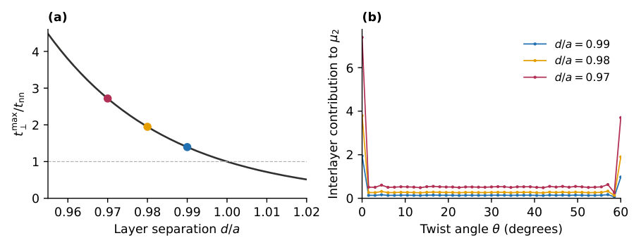
<figcaption class="paper-figure-caption"><b>Fig 1.</b> Figure 1: Geometric coupling and a finite spectral trace. (a) The maximum interlayer hopping relative to nearest-neighbor intralayer hopping, Eq. (10), for ξ/a = 0.03. Colored points mark the three calculated separations. (b) The interlayer contribution ∥B∥2 F /N to the second spectral moment for open honeycomb disks with R/a = 25 and N = 1510 sites per layer. Each curve contains 41 directly evaluated angles from 0◦to 60◦, with lines connecting the samples. The same quantity is independently recovered from all 3020 eigenvalues using Eq. (11).</figcaption>
</figure>
<figure class="paper-figure-card">

<figcaption class="paper-figure-caption"><b>Fig 2.</b> Figure 1 evaluates this decomposition for R/a = 25 and ξ/a = 0.03. The intralayer contribution is identical for all angles and separations. The interlayer contribution depends on registry as well as separation, and increases when d is reduced at fixed angle because every entry of B increases. Direct sums of squared hoppings and second moments of the archived eigenvalues agree to an absolute tolerance of 10−10 across all 123 spectra, validating the finite-matrix trace normalization and spectral calculation. The relation to Bellissard’s viewpoint is the distinction between a finite normalized trace and a bulk trace on a specified algebra. A second moment averages a polynomial of the...</figcaption>
</figure>
<figure class="paper-figure-card">
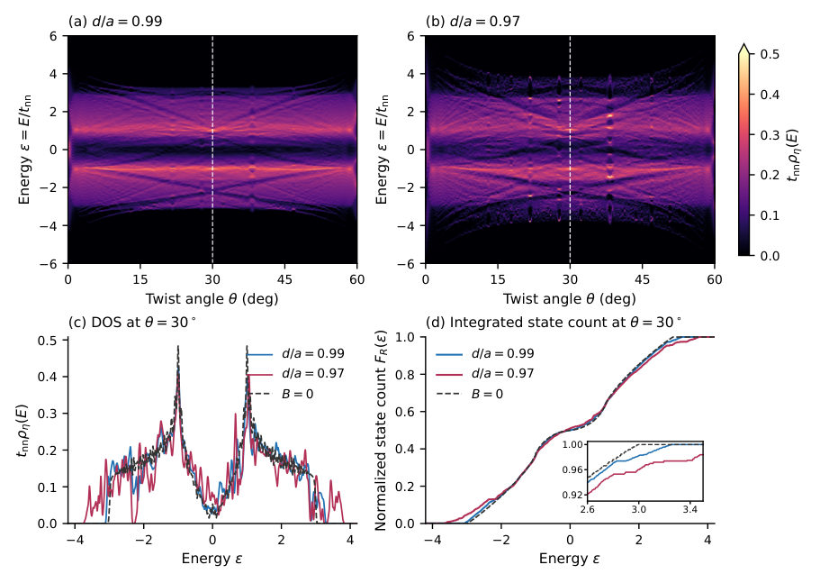
<figcaption class="paper-figure-caption"><b>Fig 3.</b> Figure 2: Butterfly-like spectral reconstruction and finite state counting in the bilayer model. (a,b) DOS maps for d/a = 0.99 and 0.97, with R/a = 25, ξ/a = 0.03, and 1510 sites in each open disk. The angle spacing is 0.25◦. The DOS integrates to one and uses a common Gaussian width η/tnn = 0.02 and color scale, clipped above tnnρη = 0.5. White dashed lines identify the 30◦cross sections. (c) DOS at that angle, without intensity clipping. (d) The exact normalized eigenvalue count, Eq. (13), with an upper-energy inset. Black dashed curves in (c,d) give the corresponding uncoupled-layer reference, B = 0, with the same geometry and per-state normalization.</figcaption>
</figure>
</div>

<p><strong>Summary.</strong> This work bridges the gap between abstract topological band theory (gap labeling) and practical electronic structure calculations for complex, aperiodic materials like moiré bilayers. It establishes a detailed computational protocol to interpret finite-size spectra, ensuring that observed spectral changes are correctly classified as mere hybridization effects versus true topological responses. This is crucial for accurately characterizing quantum materials in condensed matter physics.</p>
<p><strong>Why it may be interesting.</strong> The rigorous connection between abstract topological invariants (like those from K-theory) and measurable quantities from computational solid-state physics is highly relevant for understanding emergent quantum phenomena in engineered materials.</p>
<details>
<summary>Detailed structure</summary>
<p><strong>Main problem.</strong> The paper aims to rigorously connect the abstract mathematical framework of Bellissard's gap labeling for aperiodic solids to the concrete electronic structure calculations performed on quasiperiodic bilayers.</p>
<p><strong>Main result.</strong> It develops a detailed computational framework specifying how to translate atomistic spectral measurements (like finite state counts) into quantities that can be compared with bulk topological invariants, while carefully distinguishing between spectral weight redistribution and true topological response.</p>
<p><strong>Method.</strong> The methodology involves analyzing spectral moments, calculating finite state counts, and developing protocols for handling nonorthogonal orbitals and basis function movement in electronic structure codes.</p>
<p><strong>Model / system.</strong> The primary model is a quasiperiodic bilayer, exemplified by a honeycomb structure, whose electronic properties are governed by a tight-binding Hamiltonian incorporating interlayer coupling and twist angles.</p>
<p><strong>Key observables.</strong> Integrated Density of States (IDS), spectral variance (second-moment identity), finite state count ($F_R$), and topological invariants like the Chern number.</p>
<p><strong>Important parameters / regimes.</strong> Interlayer coupling ratio ($t_{\max}^{\perp} / t_{	ext{nn}}$), system size ($R$), and relative sliding/twist angle ($ heta$).</p>
<p><strong>Assumptions / limitations.</strong> The analysis assumes that a gap label requires more than just a plateau in the IDS, necessitating a pairing of the spectral projector to define a topological response.</p>
<p><strong>Figures summary.</strong> The notes reference figures showing spectral redistribution in DOS maps and the comparison between spectral moments and state counts, illustrating the sensitivity to interlayer coupling.</p>
<p><strong>Paper structure.</strong> The paper progresses from defining the theoretical gap labeling framework using covariant observables to applying this theory to a finite honeycomb bilayer model. It then details the necessary computational steps for atomistic codes, culminating in a hierarchy of diagnostic checks to claim a topological invariant.</p>
</details>
<details>
<summary>Abstract</summary>
<p>Bellissard's framework uses covariant observables to describe aperiodic solids. We examine how butterfly-like spectra in twisted bilayers can be related to bulk gap labels and topological response. A bulk gap permits a spectral projector and an integrated density of states. A topological response requires an additional pairing of that projector. In an illustrative finite honeycomb bilayer, an exact second-moment identity isolates the interlayer contribution to spectral variance. Angle-resolved spectra, finite state counts, an uncoupled reference, and size and broadening checks show how coupling redistributes spectral weight without assigning a bulk gap label. We then examine the requirements for atomistic electronic-structure calculations, including nonorthogonal orbitals, projected densities of states, and basis functions that move during relative sliding. The resulting framework specifies the steps needed to connect atomistic spectra with bulk state counting and topological response.</p>
</details>
<p><sub><a href="#top">↑ back to top</a></sub></p>

<p><a id="paper-2609.37628"></a></p>
<h3 id="operational-theory-for-photonic-circuits-generalizing-linear-optics-beyond-quantum-theory"><a href="http://arxiv.org/abs/2609.37628v1">Operational theory for photonic circuits: generalizing linear optics beyond quantum theory</a></h3>
<p><strong>Authors:</strong> Ismaël Septembre, Matthias Kleinmann, Martin Plávala<br>
<strong>Type:</strong> theory · <strong>Category:</strong> quantum information and computing · <strong>PDF:</strong> <a href="https://arxiv.org/pdf/2609.37628v1">https://arxiv.org/pdf/2609.37628v1</a><br>
<strong>Analysis basis:</strong> full PDF text, analyzed in chunks
<strong>Topic relevance:</strong> <code>interference shaping light</code> <strong>3/5</strong> · <code>quantum measurements</code> <strong>2/5</strong> · <code>Keldysh / 2PI / non-Gaussian methods</code> <strong>1/5</strong> · <code>analog quantum simulation</code> <strong>1/5</strong> · <code>methods for driven-dissipative</code> <strong>1/5</strong></p>
<div class="figure-strip-hint">↔ Scroll figures horizontally</div>
<div class="paper-figures-scroll">
<figure class="paper-figure-card">
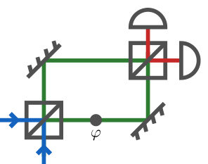
<figcaption class="paper-figure-caption"><b>Fig 1.</b> Figure 3. Sketch of a Mach-Zehnder interferometer. The two input modes first interfere on a beam splitter, then the phase of one of the arms is shifted by φ, then the modes again enter a beam splitter and a coincidence measurement is performed on the output.</figcaption>
</figure>
<figure class="paper-figure-card">
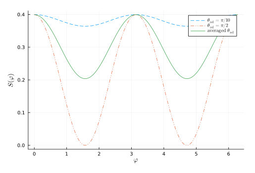
<figcaption class="paper-figure-caption"><b>Fig 2.</b> Figure 5. Measurement signal S(φ) in the Mach-Zehnder in- terferometer in quantum theory as a function of the phase shift φ introduced in one arm of the interferometer for dif- ferent initial relative phases θrel = π/10 (dashed blue line), θrel = π/2 (red dotted-dashed line), and averaged over all rel- ative phases (green solid line). The input states are coherent states with parameters αini 1 = 1 and αini 2 = eiθrel.</figcaption>
</figure>
<figure class="paper-figure-card">
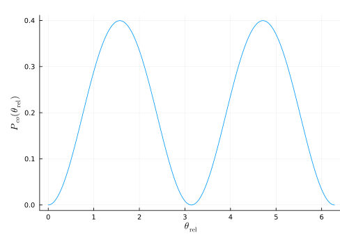
<figcaption class="paper-figure-caption"><b>Fig 3.</b> Figure 4. Coincidence probability in the Hong-Ou-Mandel set-up in quantum theory as a function of the initial relative phase between the two input states θrel. The input states are coherent states with parameters αini 1 = 1 and αini 2 = eiθrel.</figcaption>
</figure>
<figure class="paper-figure-card">
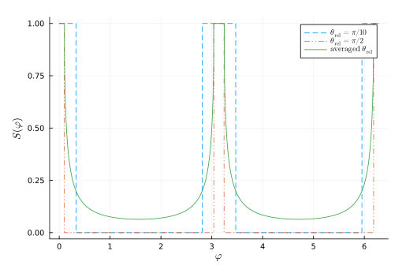
<figcaption class="paper-figure-caption"><b>Fig 4.</b> Figure 8. Output coincidence probability in Mach-Zehnder in- terferometer in classical theory as a function of the phase shift φ introduced in one arm of the interferometer for different ini- tial relative phases θrel = π/10 (dashed blue line), θrel = π/2 (red dotted-dashed line), and averaged over all initial relative phases (green solid line). Here we used Eth/Ecl = 9/10.</figcaption>
</figure>
<figure class="paper-figure-card">
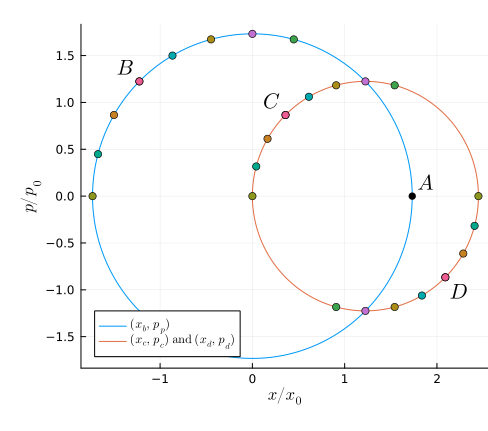
<figcaption class="paper-figure-caption"><b>Fig 5.</b> Figure 6. Points in phase space before and after passing through a beam splitter. Point A represents the state of the first input oscillator which in our formulation is fixed. Points B are the states of the second input oscillator for various values of θrel. Points C and D are the states of the output oscillators, these points are colour-coded so that same colour of points B, C, D corresponds to the same relative phase θrel.</figcaption>
</figure>
</div>

<p><strong>Summary.</strong> This paper generalizes linear optics theory by mapping quantum quadrature operators onto classical phase-space coordinates. It investigates fundamental quantum phenomena like the Hong-Ou-Mandel effect and MZI using this generalized framework. The key finding is that these interference effects persist across classical and alternative theories, suggesting a broader physical principle governs them.</p>
<p><strong>Why it may be interesting.</strong> This work directly addresses the foundations of quantum optics by testing the necessity of quantum mechanics for observed photonic phenomena, which is highly relevant for understanding photonic quantum computing architectures.</p>
<details>
<summary>Detailed structure</summary>
<p><strong>Main problem.</strong> To generalize the theory of linear optics beyond quantum mechanics by developing a framework based on quadrature operators and analyzing interference phenomena.</p>
<p><strong>Main result.</strong> The vanishing of photon coincidences at a beam splitter and the behavior of Mach-Zehnder interferometry are found to occur in both classical and modified quantized theories, suggesting these effects are general features of the generalized framework.</p>
<p><strong>Method.</strong> The authors use an analogy between quantum quadrature operators and phase-space coordinates, developing a generalized probabilistic theory framework using pseudo-probability distributions on phase space.</p>
<p><strong>Model / system.</strong> The study focuses on photonic circuits involving linear optical elements like beam splitters and phase shifters, modeled using two coupled harmonic oscillators in phase space.</p>
<p><strong>Key observables.</strong> Coincidence probability ($P_{co}$), visibility ($V$), and the joint numerical range of coincidence vs. Hadamard coincidence measurements.</p>
<p><strong>Important parameters / regimes.</strong> Relative phase ($   heta_{rel}$), energy threshold ($E_{th}$), and the comparison between classical, quantum, and sawtooth theory limits.</p>
<p><strong>Assumptions / limitations.</strong> The analysis relies on describing states via a pseudo-probability distribution $
ho(x, p)$ on phase space, and comparing results across different theoretical models (classical, quantum, etc.).</p>
<p><strong>Figures summary.</strong> Figures illustrate the HOM dip and MZI behavior for different theories, and Figure 11 compares the joint numerical ranges for coincidence and Hadamard measurements across quantum, classical, and sawtooth models.</p>
<p><strong>Paper structure.</strong> The paper progresses by establishing the generalized framework using quadrature operators, applying it to fundamental linear optical setups (HOM, MZI), and culminating in a comparison of predictions across classical, quantum, and alternative theories, including contextuality tests.</p>
</details>
<details>
<summary>Abstract</summary>
<p>We use the analogy between the quadrature operators in quantum optics and the phase-space coordinates in a mechanical harmonic oscillator to generalise the theory of linear optics beyond quantum theory. For this, we introduce a framework for analysing photonic circuits within generalised probabilistic theories based on quadrature operators. Using this framework, we ask whether phenomena like the Hong-Ou-Mandel effect, Mach-Zehnder interferometry are specific to quantum theory or also occur across a broader class of theories. We find the latter: the vanishing photon coincidences at the output of a beam splitter also occur for classical light and for a modified version of quantised light. Similarly, for Mach-Zehnder interferometry we find that there is no qualitative difference between quantum theory and these alternative theories. Our framework can serve as a foundation to study generalised theories of complex photonic set-ups and photonic quantum computers.</p>
</details>
<p><sub><a href="#top">↑ back to top</a></sub></p>

<p><a id="paper-2609.37767"></a></p>
<h3 id="multistate-torsion-in-zitterbewegung"><a href="http://arxiv.org/abs/2609.37767v1">Multistate Torsion in Zitterbewegung</a></h3>
<p><strong>Authors:</strong> Wojciech J. Jankowski<br>
<strong>Type:</strong> theory · <strong>Category:</strong> other · <strong>PDF:</strong> <a href="https://arxiv.org/pdf/2609.37767v1">https://arxiv.org/pdf/2609.37767v1</a><br>
<strong>Analysis basis:</strong> full PDF text, analyzed in chunks
<strong>Topic relevance:</strong> <code>Keldysh / 2PI / non-Gaussian methods</code> <strong>3/5</strong> · <code>methods for driven-dissipative</code> <strong>3/5</strong> · <code>quantum measurements</code> <strong>1/5</strong></p>
<div class="figure-strip-hint">↔ Scroll figures horizontally</div>
<div class="paper-figures-scroll">
<figure class="paper-figure-card">
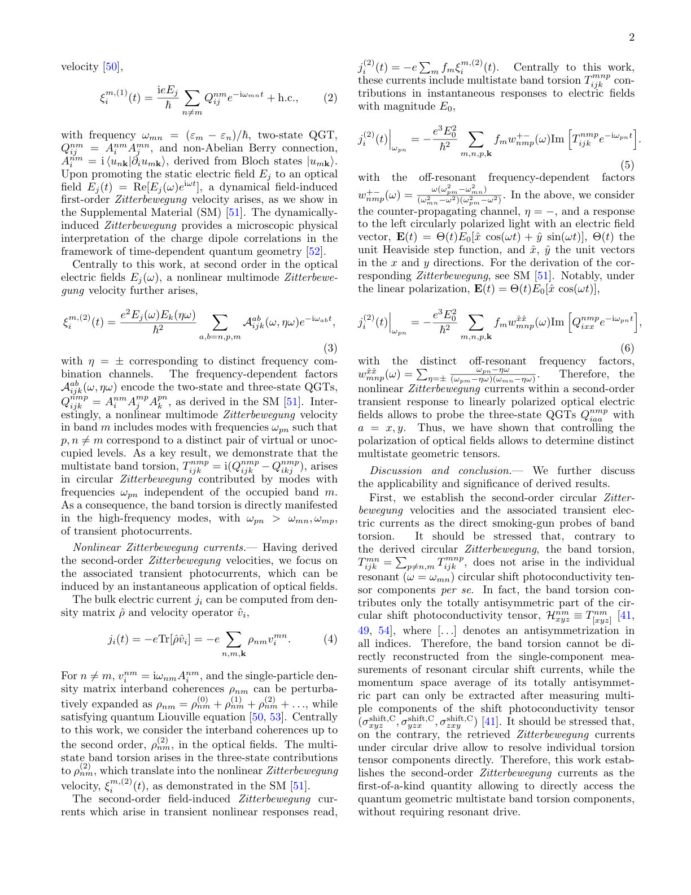
<figcaption class="paper-figure-caption"><b>Fig 1.</b> Low-resolution page preview, page 2</figcaption>
</figure>
<figure class="paper-figure-card">
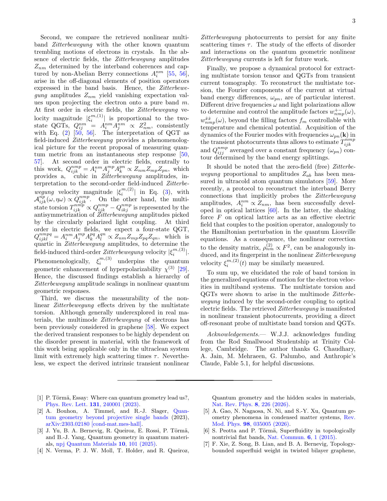
<figcaption class="paper-figure-caption"><b>Fig 2.</b> Low-resolution page preview, page 3</figcaption>
</figure>
<figure class="paper-figure-card">
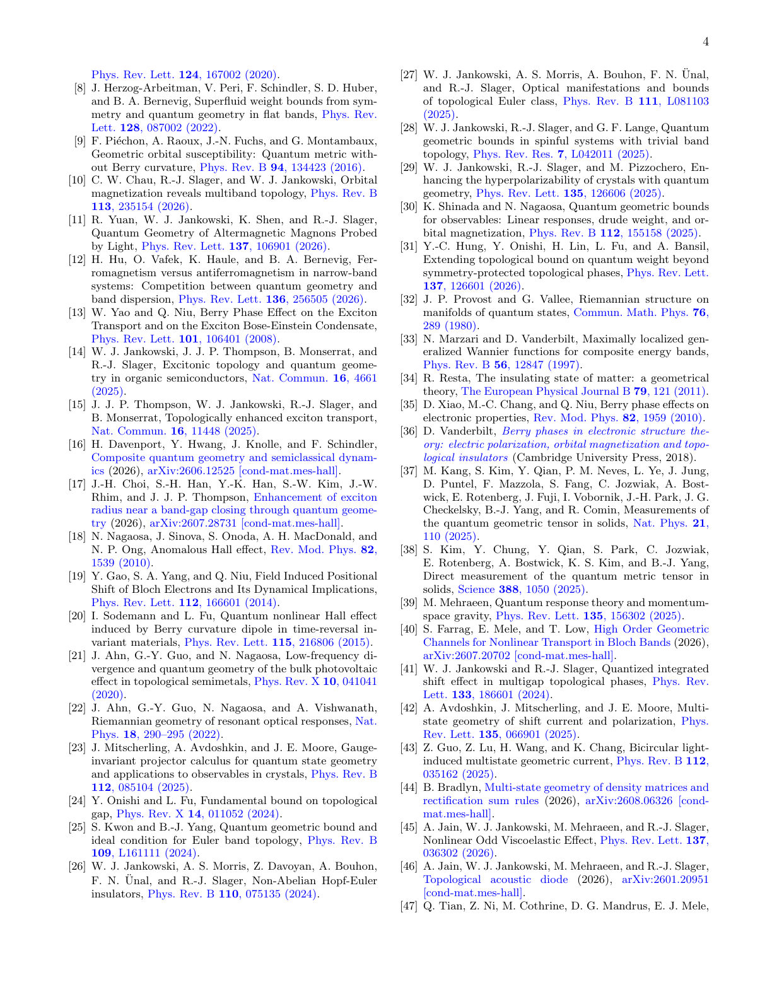
<figcaption class="paper-figure-caption"><b>Fig 3.</b> Low-resolution page preview, page 4</figcaption>
</figure>
<figure class="paper-figure-card">
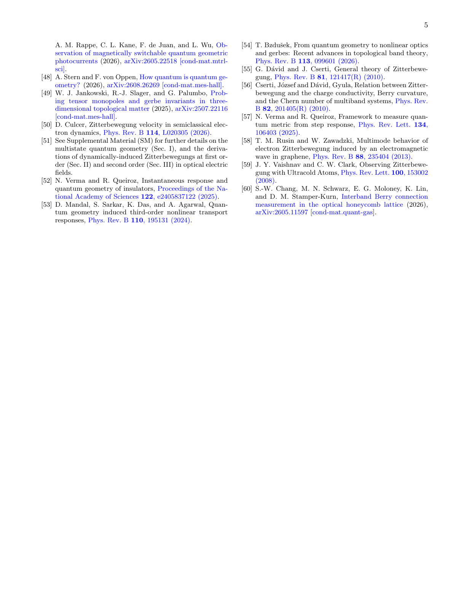
<figcaption class="paper-figure-caption"><b>Fig 4.</b> Low-resolution page preview, page 5</figcaption>
</figure>
<figure class="paper-figure-card">
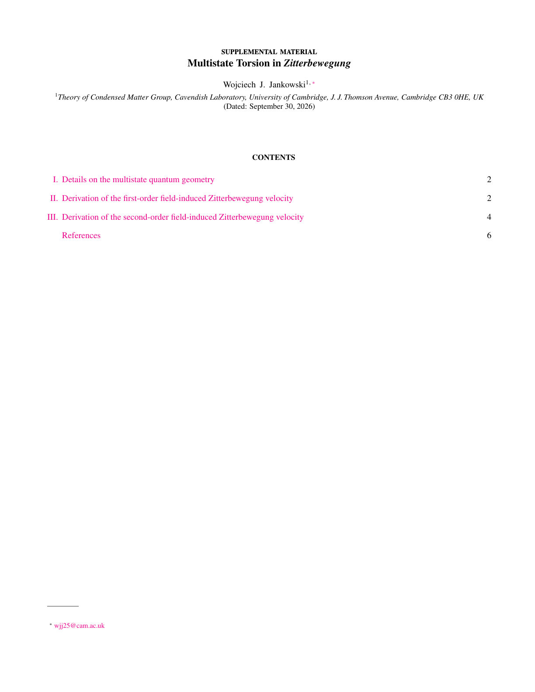
<figcaption class="paper-figure-caption"><b>Fig 5.</b> Low-resolution page preview, page 6</figcaption>
</figure>
</div>

<p><strong>Summary.</strong> This theoretical work develops a framework to analyze the nonlinear Zitterbewegung of electrons in crystals, incorporating the effects of band torsion using multi-state quantum geometric tensors. The key finding is that the resulting transient photocurrents offer a novel, direct method to measure the band torsion, bypassing limitations found in traditional resonant optical measurements.</p>
<p><strong>Why it may be interesting.</strong> The connection between high-order nonlinear optical responses (like transient photocurrents) and fundamental geometric properties of the band structure (like band torsion) provides a powerful, non-perturbative diagnostic tool for quantum materials.</p>
<details>
<summary>Detailed structure</summary>
<p><strong>Main problem.</strong> The paper derives and proposes methods to measure nonlinear Zitterbewegung velocity and associated transient photocurrent responses that are augmented by band torsion in crystals.</p>
<p><strong>Main result.</strong> The nonlinear Zitterbewegung currents provide a direct, off-resonant diagnostic tool to access individual components of the quantum geometric multistate band torsion tensor, which is inaccessible via standard resonant measurements.</p>
<p><strong>Method.</strong> The analysis involves solving the quantum Liouville equation perturbatively to calculate higher-order density matrix elements, leading to the derivation of second-order Zitterbewegung velocities.</p>
<p><strong>Model / system.</strong> The system models electrons in clean crystals, utilizing a multi-state quantum geometric framework incorporating band torsion and higher-order quantum geometric tensors (QGTs).</p>
<p><strong>Key observables.</strong> Multistate band torsion ($T_{nmp}^{ijk}$), nonlinear Zitterbewegung velocity ($\xi_m^{(2)}$), and transient nonlinear photocurrents ($j^{(2)}_i(t)$).</p>
<p><strong>Important parameters / regimes.</strong> Second order in optical electric fields, clean crystal limit ($ au  o \infty$), and specific polarization states (circular/linear).</p>
<p><strong>Assumptions / limitations.</strong> The analysis is based on semiclassical equations of motion for electron velocity and assumes the ultraclean system limit.</p>
<p><strong>Paper structure.</strong> The paper progresses by deriving the equation of motion for electron velocity, extending the analysis to second order in optical fields, and finally relating the resulting transient photocurrents to the band torsion tensor via tomography protocols.</p>
</details>
<details>
<summary>Abstract</summary>
<p>We derive nonlinear Zitterbewegung velocity of electrons augmented by band torsion in crystals. The equation of motion with multistate quantum geometric tensors and torsion culminates in transient nonlinear photocurrent responses distinct from the recently measured resonant steady-state photovoltaic effects induced by circularly polarized light. Tomography protocols for measuring the multistate quantum geometric torsion tensors are proposed.</p>
</details>
<p><sub><a href="#top">↑ back to top</a></sub></p>

<p><a id="paper-2609.36627"></a></p>
<h3 id="synchronized-quantum-devices-in-lossy-channels"><a href="http://arxiv.org/abs/2609.36627v1">Synchronized Quantum Devices in Lossy Channels</a></h3>
<p><strong>Authors:</strong> Ravi Singh Adhikari, Aman Gupta, Xiaoyu Ai, Robert Malaney<br>
<strong>Type:</strong> both · <strong>Category:</strong> quantum information and computing · <strong>PDF:</strong> <a href="https://arxiv.org/pdf/2609.36627v1">https://arxiv.org/pdf/2609.36627v1</a><br>
<strong>Analysis basis:</strong> full PDF text, analyzed in chunks
<strong>Topic relevance:</strong> <code>quantum optics experiment</code> <strong>3/5</strong> · <code>quantum measurements</code> <strong>2/5</strong> · <code>QC/QI experiment</code> <strong>1/5</strong> · <code>interference shaping light</code> <strong>1/5</strong></p>
<div class="figure-strip-hint">↔ Scroll figures horizontally</div>
<div class="paper-figures-scroll">
<figure class="paper-figure-card">
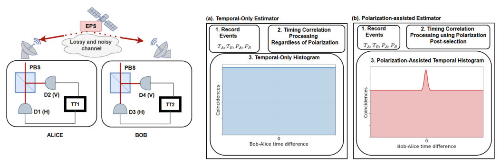
<figcaption class="paper-figure-caption"><b>Fig 1.</b> Fig. 1: Temporal-only and polarization-assisted estimators using identical polarization-resolved receiver hardware. An entangled-photon source (EPS) onboard the satellite distributes correlated photon pairs to two ground stations through independent lossy and noisy free-space channels. At each receiver, a polarizing beam splitter (PBS) separates the incoming photons into horizontal (H) and vertical (V) components, which are detected by polarization-resolved single-photon detectors (D1–D4) and recorded by local time taggers (TT1 and TT2). (a) In the temporal-only estimator, the polarization arrays PA and PB are discarded, and the temporal-correlation histogram is constructed from the...</figcaption>
</figure>
<figure class="paper-figure-card">
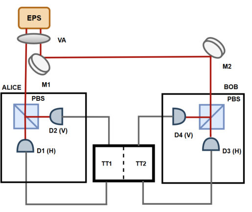
<figcaption class="paper-figure-caption"><b>Fig 2.</b> Fig. 2: Experimental setup for the polarization-assisted clock-synchronization proof-of-concept. The entangled-photon source (EPS) generates polarization- entangled photon pairs, which are routed through the free-space optical chan- nel using mirrors M1–M2. A variable attenuator (VA) introduces controlled channel loss symmetrically at Alice’s and Bob’s stations to emulate high- loss satellite-channel conditions. At Alice and Bob, polarizing beam splitters (PBSs) separate the horizontal (H) and vertical (V) polarization components, which are detected by single-photon counting modules D1–D4. See main text for the setup of TT1 and TT2.</figcaption>
</figure>
<figure class="paper-figure-card">

<figcaption class="paper-figure-caption"><b>Fig 3.</b> Fig. 3: Experimental synchronization-acquisition probability, Psucc,l, as a function of total channel loss, η. Blue and orange denote background- count rates of Rb = 1.5kHz and Rb = 70kHz, respectively. Curves are logistic least-squares fits. Stars denote the fitted synchronization-acquisition loss thresholds for Psucc,l = 0.9.</figcaption>
</figure>
<figure class="paper-figure-card">
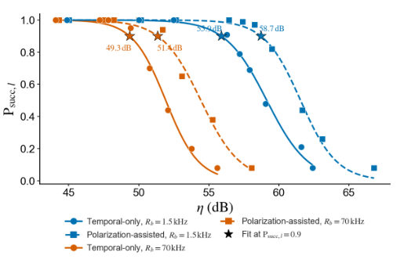
<figcaption class="paper-figure-caption"><b>Fig 4.</b> Fig. 3 presents the experimentally extracted synchronization-acquisition probability for the temporal-only and polarization-assisted estimators at two background-count rates, Rb = 1.5kHz and Rb = 70kHz, representative of low-background and high-background operating conditions, respectively, as a function of η ranging from 45–68dB. At lower total channel loss, both estimators reliably recover the clock offset. As the total channel loss increases, the temporal-only estimator transitions from reliable to unreliable acquisition, whereas polarization post-selection shifts this transition toward higher total channel loss. For the synchronization-acquisition criterion Psucc,l ≥0.9, we define the...</figcaption>
</figure>
<figure class="paper-figure-card">
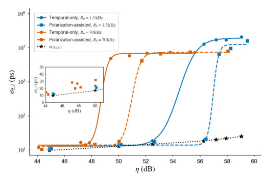
<figcaption class="paper-figure-caption"><b>Fig 5.</b> Fig. 4: SD of the experimentally estimated clock offset, σˆτ,l, as a function of total channel loss, η, for l ∈{T, P}. Blue and orange correspond to background-count rates of Rb = 1.5kHz and Rb = 70kHz, respectively. The black dotted curve with star markers denotes the true pair coincidence- only CRLB, σCRLB,t. The inset zooms in on the low-loss region, where the experimentally estimated SDs are comparable to σCRLB,t. Curves are logistic fits to the experimental data.</figcaption>
</figure>
</div>

<p><strong>Summary.</strong> This paper introduces a polarization-assisted protocol to enhance clock synchronization for quantum devices communicating over lossy channels like satellite links. By exploiting polarization correlations, the method effectively suppresses background noise that plagues standard timing measurements. This results in a significant extension of the operational range, proving its practical importance for the quantum internet.</p>
<p><strong>Why it may be interesting.</strong> This work directly addresses the practical limitations of quantum networking by providing a concrete, experimentally validated technique to maintain synchronization in noisy, lossy channels, which is crucial for scaling quantum internet infrastructure.</p>
<details>
<summary>Detailed structure</summary>
<p><strong>Main problem.</strong> The core challenge is achieving reliable clock synchronization for quantum devices operating over high-loss, long-distance quantum channels, such as satellite-to-ground links.</p>
<p><strong>Main result.</strong> The proposed polarization-assisted protocol significantly improves synchronization robustness, extending the reliable operational range by up to 40% compared to methods relying only on temporal coincidence measurements.</p>
<p><strong>Method.</strong> The authors compare a temporal-only estimation method against a polarization-assisted estimator, which uses polarization post-selection to suppress background noise.</p>
<p><strong>Model / system.</strong> The system involves entangled photon pairs generated via SPDC and distributed over free-space channels. The analysis models the timing error ($\Delta t$) and compares the performance of estimators based on time-only versus polarization-resolved coincidence counts.</p>
<p><strong>Key observables.</strong> Synchronization-acquisition probability ($P_{	ext{succ},l}$), Fisher Information ($I$), and the clock offset ($   au$).</p>
<p><strong>Important parameters / regimes.</strong> Channel loss ($\eta$), background count rate ($R_b$), and the visibility ($V$) of the entangled source.</p>
<p><strong>Assumptions / limitations.</strong> Timing errors are assumed to be independent Gaussian variables, and the temporal statistics are assumed independent of the polarization statistics.</p>
<p><strong>Figures summary.</strong> Figure 5 compares temporal-only vs. polarization-assisted histograms, showing the polarization method reveals a clear peak obscured by noise in the former. Figure 6 quantifies the increased loss threshold ($\eta_{90}$) achieved by the polarization-assisted estimator.</p>
<p><strong>Paper structure.</strong> The paper develops the theoretical framework by deriving performance metrics (like Fisher Information) for both estimators, analyzes the improvement in the strongly background-dominated limit, and culminates in experimental/simulation results demonstrating the extended operational range in high-loss regimes.</p>
</details>
<details>
<summary>Abstract</summary>
<p>Due to their tight temporal coupling, entangled photon pairs produced by spontaneous parametric down-conversion offer a new route to improved network synchronization among quantum-enabled devices. In the emerging space-based quantum internet, such synchronization will be pivotal to operational success. Here, we propose and experimentally demonstrate a new polarization-assisted protocol that allows quantum-enabled devices to remain synchronized under the high loss conditions anticipated for satellite-to-ground quantum channels. Our experimental results show that polarization assistance extends reliable synchronization acquisition to higher channel losses and an increase of up to 40$\%$ in satellite-to-ground distance. Supporting Monte Carlo simulations show that this performance improvement extends over a wide range of photon-starved conditions. Collectively, these results not only provide a proof of concept for polarization-assisted network synchronization but also demonstrate its pragmatic importance in significantly extending the range under which quantum-enabled devices forming the backbone of the quantum internet can remain highly synchronized.</p>
</details>
<p><sub><a href="#top">↑ back to top</a></sub></p>

<p><a id="paper-2609.38174"></a></p>
<h3 id="imaging-phase-winding-in-topological-superconductors-with-a-fork-tip-josephson-stm"><a href="http://arxiv.org/abs/2609.38174v1">Imaging phase winding in topological superconductors with a fork-tip Josephson STM</a></h3>
<p><strong>Authors:</strong> Vladislav Poliakov, Archisman Panigrahi<br>
<strong>Type:</strong> theory · <strong>Category:</strong> strongly correlated electrons · <strong>PDF:</strong> <a href="https://arxiv.org/pdf/2609.38174v1">https://arxiv.org/pdf/2609.38174v1</a><br>
<strong>Analysis basis:</strong> full PDF text, analyzed in chunks
<strong>Topic relevance:</strong> <code>quantum measurements</code> <strong>3/5</strong> · <code>Keldysh / 2PI / non-Gaussian methods</code> <strong>2/5</strong> · <code>interference shaping light</code> <strong>1/5</strong></p>
<div class="figure-strip-hint">↔ Scroll figures horizontally</div>
<div class="paper-figures-scroll">
<figure class="paper-figure-card">
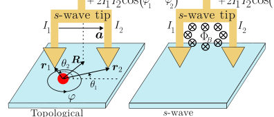
<figcaption class="paper-figure-caption"><b>Fig 1.</b> Figure 1. Schematic of (a) fork-tip Josephson STM near an impurity on a topological superconductor. The impurity gen- erates a local phase winding in the anomalous Green’s func- tion around it, leading to the phase difference (φ1 −φ2) be- tween two junctions and hence to the interference contribution to the critical current. (b) Conventional fork-tip interference in an s-wave superconductor where an Aharonov-Bohm phase difference is induced by an external magnetic flux ΦB.</figcaption>
</figure>
<figure class="paper-figure-card">
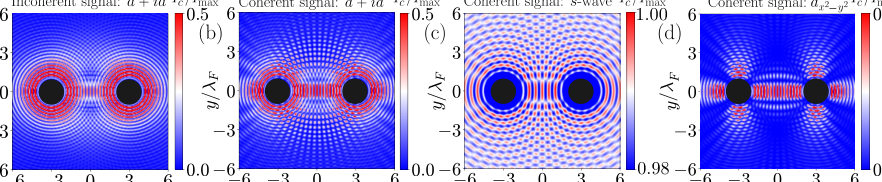
<figcaption class="paper-figure-caption"><b>Fig 2.</b> Figure 2. The spatial pattern of the squared fork-tip critical current near a single point impurity for different superconducting order parameters. (a) I2 c (R) for d + id superconductor (∆θ = ˜∆e2iθ) without phase coherence between the two tips. Since there is no interference term (I2 c (R) = I2 0(r1) + I2 0(r2)) this signal is insensitive to the phase of the order parameter. Panel (b) shows the analogous squared critical current for two phase-coherent tips. The signal now exhibits hyperbolic fringes due to the interference term (2I0(r1)I0(r2) cos(φ1 −φ2)) in I2 c (R). (c) Coherent signal for s-wave (∆θ = ˜∆) superconductor, with a finite background due to the large bulk contribution to...</figcaption>
</figure>
<figure class="paper-figure-card">
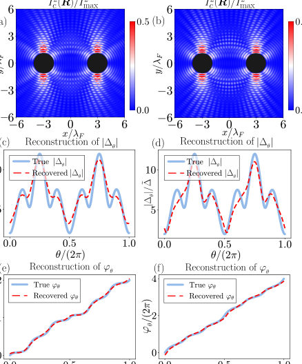
<figcaption class="paper-figure-caption"><b>Fig 3.</b> Figure 3. Reconstruction of order parameter from the squared fork-tip critical current I2 c . (a) Spatial map of I2 c point impu- rity for order parameter ∆1(θ) ∝(6ei2θ+e−i2θ−3ei4θ−2e−i4θ) defined in Eq. (20). (c,e) Magnitude and phase of ∆1(θ) re- constructed by fitting the signal in panel (a) using angular harmonic expansion in Eq. (19). (b) The same as (a) but for ∆2(θ) ∝(−3ei2θ −2e−i2θ +6ei4θ +e−i4θ) from Eq. (20). (d,f) Corresponding reconstruction of |∆2(θ)| and φ2(θ). Although ∆1(θ) and ∆2(θ) have the same magnitude, their phase wind- ings are different. The agreement between reconstructed and original curves demonstrates that both the magnitude and the phase of the order parameter...</figcaption>
</figure>
</div>

<p><strong>Summary.</strong> This work proposes using a fork-tip Josephson Scanning Tunneling Microscope (STM) to overcome the difficulty of measuring the complex phase winding in topological superconductors. By acting as an interferometer, the setup measures the relative phase difference between two points, allowing researchers to reconstruct the full angular dependence of the superconducting order parameter. This offers a direct pathway to experimentally verify theoretical predictions about topological superconductivity.</p>
<p><strong>Why it may be interesting.</strong> The technique provides a novel, phase-sensitive probe for superconducting order parameters, which is crucial for understanding exotic states like topological superconductivity, bridging condensed matter theory with advanced experimental diagnostics.</p>
<details>
<summary>Detailed structure</summary>
<p><strong>Main problem.</strong> The primary challenge is accessing the complex phase winding of superconducting order parameters in topological superconductors using conventional real-space measurement techniques.</p>
<p><strong>Main result.</strong> The proposed fork-tip Josephson STM setup allows for the reconstruction of the angular dependence of both the gap-function magnitude and its complex phase by measuring the relative phase difference between two points.</p>
<p><strong>Method.</strong> The method involves deriving the Josephson current in the weak tunneling limit, which is then adapted for a fork-tip geometry to measure interference patterns sensitive to relative phase differences.</p>
<p><strong>Model / system.</strong> The system is a topological superconductor probed by a fork-tip Josephson STM near an impurity. The theoretical framework utilizes anomalous Green's functions derived from the Bogoliubov-de Gennes (BdG) Hamiltonian.</p>
<p><strong>Key observables.</strong> The interference contribution to the critical current, $I_c(R)$, and the spatial pattern of the squared critical current, $I_c^2(R)$.</p>
<p><strong>Important parameters / regimes.</strong> The relative phase difference ($\varphi_1 - \varphi_2$) between the two tips, and the superconducting gap function harmonics ($\Delta_m$).</p>
<p><strong>Assumptions / limitations.</strong> The analysis relies on the weak tunneling limit and semiclassical approximations for the anomalous Green's function in the vicinity of the impurity.</p>
<p><strong>Figures summary.</strong> Figures illustrate the schematic setup, the resulting critical current formula, and the successful reconstruction of the order parameter's magnitude and phase from the measured spatial pattern.</p>
<p><strong>Paper structure.</strong> The paper builds from the general derivation of the Josephson current for arbitrary order parameters, introduces the limitations of single-tip measurements, and then details the fork-tip interferometer setup to extract phase information via numerical computation and fitting procedures.</p>
</details>
<details>
<summary>Abstract</summary>
<p>The complex phase winding in a topological superconductor remains challenging to access by conventional real-space probes. We propose a scheme to probe this winding with a fork-tip Josephson STM near an impurity, where two superconducting tips form an interferometer sensitive to phase differences between two positions. The signal remains accessible even if the relative phase between the fork-tip and sample fluctuates, establishing a route towards a local phase-sensitive STM probe of topological superconductivity. We numerically compute the interference pattern to demonstrate that the magnitude and phase of the order parameter can be reconstructed as a function of angle, providing a route towards resolving the longstanding open experimental problem of directly detecting phase winding in topological superconductors.</p>
</details>
<p><sub><a href="#top">↑ back to top</a></sub></p>

<p><a id="paper-2609.37802"></a></p>
<h3 id="quantum-complexity-of-ancilla-free-unitary-embeddings-for-nonlinear-dynamics-via-generalized-state-dependent-double-bracket-flows"><a href="http://arxiv.org/abs/2609.37802v1">Quantum Complexity of Ancilla-Free Unitary Embeddings for Nonlinear Dynamics via Generalized State-Dependent Double-Bracket Flows</a></h3>
<p><strong>Authors:</strong> Yuki Ito, Hideaki Hakoshima, Keisuke Fujii<br>
<strong>Type:</strong> theory · <strong>Category:</strong> quantum information and computing · <strong>PDF:</strong> <a href="https://arxiv.org/pdf/2609.37802v1">https://arxiv.org/pdf/2609.37802v1</a><br>
<strong>Analysis basis:</strong> full PDF text, analyzed in chunks
<strong>Topic relevance:</strong> <code>analog quantum simulation</code> <strong>3/5</strong> · <code>Keldysh / 2PI / non-Gaussian methods</code> <strong>1/5</strong> · <code>methods for driven-dissipative</code> <strong>1/5</strong> · <code>quantum measurements</code> <strong>1/5</strong></p>
<div class="figure-strip-hint">↔ Scroll figures horizontally</div>
<div class="paper-figures-scroll">
<figure class="paper-figure-card">
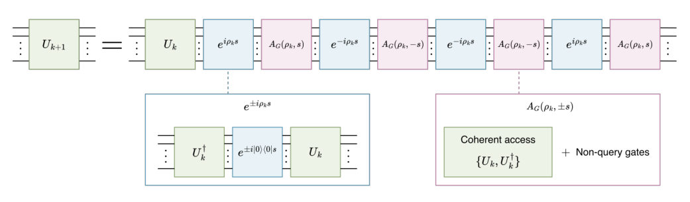
<figcaption class="paper-figure-caption"><b>Fig 1.</b> FIG. 1. An overview of the recursive ancilla-free implementation of nonlinear state-dependent double-bracket dynamics in Eq. (2). This circuit implements an approximate one-step update of duration τ, recursively constructing Uk+1 from Uk and U † k. The state preparation circuit Uk satisfies Uk |0⟩= |ψk⟩, where |ψk⟩approximates the solution at tk = kτ up to a global phase. This implementation is based on the symmetric group-commutator formula, with s = p</figcaption>
</figure>
</div>

<p><strong>Summary.</strong> This paper establishes a general framework for simulating nonlinear quantum dynamics using fully coherent, ancilla-free unitary circuits. It shows that the required quantum resources scale dramatically based on whether the dynamics are contractive, nonexpansive, or expansive. The results provide optimal query complexity bounds for specific models like the Gross-Pitaevskii equation.</p>
<p><strong>Why it may be interesting.</strong> This work provides a deep theoretical link between the mathematical complexity of nonlinear physical systems and the required computational resources (query complexity) for quantum simulation, which is crucial for designing practical quantum algorithms.</p>
<details>
<summary>Detailed structure</summary>
<p><strong>Main problem.</strong> The core problem is developing a quantum algorithm to simulate nonlinear quantum dynamics using only unitary, ancilla-free circuits.</p>
<p><strong>Main result.</strong> The query complexity for simulating nonlinear dynamics is rigorously related to the stability properties (contractive, nonexpansive, expansive) of the dynamics, yielding bounds like $\exp(O(T))$ to $\exp(\exp(O(T)))$.</p>
<p><strong>Method.</strong> The authors generalize the double-bracket quantum algorithm by replacing the state-independent Hamiltonian with a state-dependent Hermitian operator, analyzing the resulting evolution via trace-norm Lipschitz bounds.</p>
<p><strong>Model / system.</strong> The model involves nonlinear dynamics governed by a state-dependent operator $G(
ho)$, exemplified by the Nonlinear Schrödinger Equation (NLSE) and the discrete Gross-Pitaevskii equation.</p>
<p><strong>Key observables.</strong> Query cost (number of oracle calls), trace-norm distance ($\|\cdot\|_1$), and the stability characterization $\Lambda(t)$.</p>
<p><strong>Important parameters / regimes.</strong> Target evolution time $T$, nonlinearity strength $g$, and approximation accuracy $\epsilon$.</p>
<p><strong>Assumptions / limitations.</strong> The analysis assumes the existence of an initial state preparation oracle and relies on bounding the Lipschitz continuity of the state-dependent operator $G(
ho)$.</p>
<p><strong>Figures summary.</strong> Figures illustrate the recursive, ancilla-free implementation structure for the quantum simulation, showing how subsequent unitary steps are built from previous ones.</p>
<p><strong>Paper structure.</strong> The paper develops a general framework by generalizing the double-bracket algorithm to handle arbitrary state-dependent nonlinearities, followed by detailed complexity analysis based on the dynamics' stability properties.</p>
</details>
<details>
<summary>Abstract</summary>
<p>Simulating nonlinear dynamics with quantum computers has gained increasing attention. In general, such simulations require additional quantum resources because unitary quantum evolution is linear. A fundamental question is how nonlinear dynamics can be embedded into fully coherent, ancilla-free unitary circuits and how the complexity of the dynamics governs the required quantum resources. In this work, we generalize the ancilla-free double-bracket quantum algorithm for imaginary-time evolution by replacing its state-independent Hamiltonian with a state-dependent Hermitian operator. Our framework recursively calls an initial state preparation oracle and its inverse, and prepares the target solution to any prescribed accuracy using a fully coherent, ancilla-free unitary embedding. We relate the query cost to the complexity of the nonlinear dynamics, specifically their sensitivity to initial conditions. We obtain query upper bounds of $\exp(O(T))$, $\exp(O(T^2))$, and $\exp(\exp(O(T)))$ when the distance between solutions contracts at least exponentially (contractive), does not increase (nonexpansive), or grows at most exponentially (expansive), respectively, where $T$ is the target evolution time. For the discrete Gross--Pitaevskii equation, our ancilla-free double-bracket circuit achieves optimal worst-case query complexity $Θ(e^{gT/2})$ over a specified family of single-qubit initial states, where $g>0$ is the nonlinearity strength. These results connect the complexity of nonlinear dynamics to the query cost of coherent quantum simulation and provide a foundation for designing ancilla-free unitary embeddings with optimal query complexity.</p>
</details>
<p><sub><a href="#top">↑ back to top</a></sub></p>

<p><a id="paper-2609.38015"></a></p>
<h3 id="variational-monte-carlo-for-the-hubbard-model"><a href="http://arxiv.org/abs/2609.38015v1">Variational Monte Carlo for the Hubbard model</a></h3>
<p><strong>Authors:</strong> Luca F. Tocchio<br>
<strong>Type:</strong> theory · <strong>Category:</strong> strongly correlated electrons · <strong>PDF:</strong> <a href="https://arxiv.org/pdf/2609.38015v1">https://arxiv.org/pdf/2609.38015v1</a><br>
<strong>Analysis basis:</strong> full PDF text, analyzed in chunks
<strong>Topic relevance:</strong> <code>analog quantum simulation</code> <strong>3/5</strong> · <code>Keldysh / 2PI / non-Gaussian methods</code> <strong>2/5</strong> · <code>methods for driven-dissipative</code> <strong>1/5</strong></p>
<div class="figure-strip-hint">↔ Scroll figures horizontally</div>
<div class="paper-figures-scroll">
<figure class="paper-figure-card">
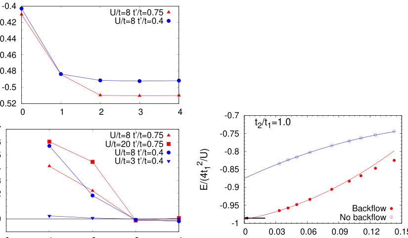
<figcaption class="paper-figure-caption"><b>Fig 1.</b> Fig. 1: Upper left panel: Ground-state energy as a function of the range of backflow parameters on the 2D square lattice for t′/t = 0.4 and 0.75 at U/t = 8. A range equal to zero corresponds to no backflow correlations in the wave function. Lower left panel: Optimized backflow param- eters η|R−R′| as a function of the distance |R −R′| between lattice sites. Results for U/t = 3 and t′/t = 0.4 correspond to a metallic state, the others to Mott insulating states. Data are shown for a lattice with L = 98 sites [21]. Right panel: Energy (in units of 4t2 1/U), as a function of t1/U, for the 1D Hubbard model with t2/t1 = 1. Filled (empty) circles denote the results with (without) backflow...</figcaption>
</figure>
<figure class="paper-figure-card">
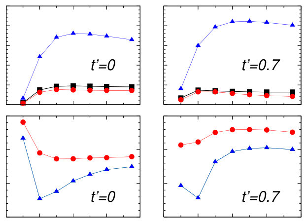
<figcaption class="paper-figure-caption"><b>Fig 2.</b> Fig. 2: Results for 18 electrons on 18 sites as a function of U/t. Upper panels: Accuracy of energy ∆E = (E0 −Ev), Ev and E0 being the variational and the exact values, respectively. Lower panels: Overlap between the exact ground state and the variational wave functions. The variational state without backflow is denoted by blue triangles, the variational state with backflow correlations is denoted by red circles [20].</figcaption>
</figure>
<figure class="paper-figure-card">
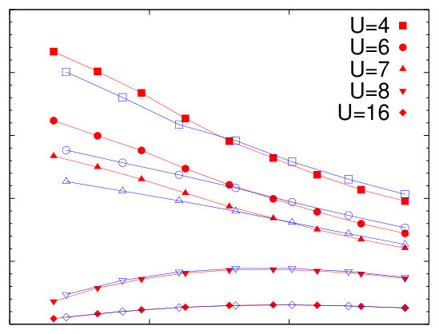
<figcaption class="paper-figure-caption"><b>Fig 3.</b> Fig. 3: Variational results for N(q) divided by |q|, as a function of |q|, for L = 98 (empty symbols) and for L = 162 (full symbols) at t′/t = 0.75. The metal-insulator transition takes place between U/t = 7 and U/t = 8, that is, where N(q) changes its behavior from linear to quadratic for |q| →0 [20].</figcaption>
</figure>
<figure class="paper-figure-card">
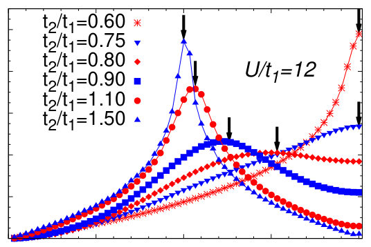
<figcaption class="paper-figure-caption"><b>Fig 4.</b> Fig. 4: Spin-spin correlations S(q) at U/t1 = 12 for different values of the hopping ratio t2/t1. Arrows indicate the location of the peaks. Data are shown on a L = 120 lattice size [33].</figcaption>
</figure>
<figure class="paper-figure-card">
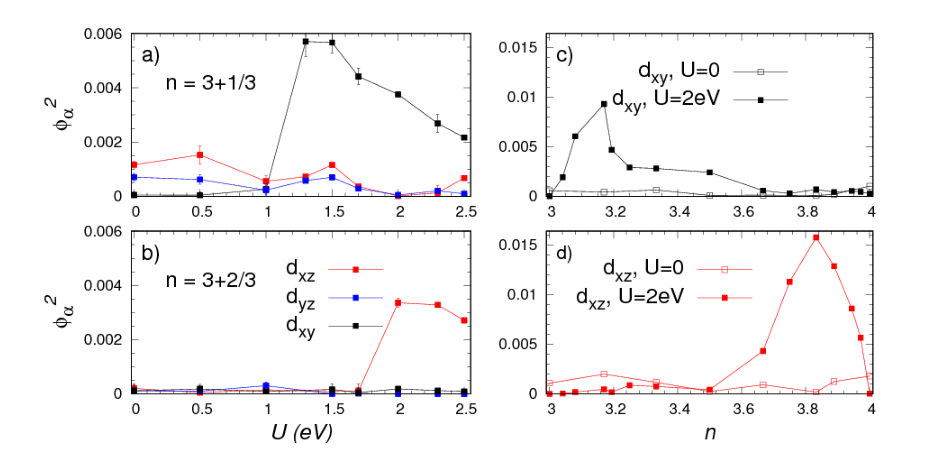
<figcaption class="paper-figure-caption"><b>Fig 5.</b> Fig. 5: Square of the superconducting order parameter ϕ2 α in each orbital as a function of U at n = 3 + 1/3 [panel a)] and n = 3 + 2/3 [panel b)]. Data are for the L = 18 × 18 cluster. Square of the superconducting order parameter in the dxy [panel c)] and dxz [panel d)] orbitals as a function of n at U = 2eV (full squares) and at U = 0 (empty squares). Data are for the L = 12 × 12 cluster. All data are computed at J = 0.2U [25].</figcaption>
</figure>
</div>

<p><strong>Summary.</strong> This lecture notes series introduces the Variational Monte Carlo method for studying the Hubbard model, covering both single- and multi-orbital extensions. It details the computational machinery, including the local estimator and Metropolis sampling, to calculate quantum expectation values. The work demonstrates how this technique can reveal complex correlated phenomena such as superconductivity and orbital selectivity in strongly interacting electron systems.</p>
<p><strong>Why it may be interesting.</strong> While focused on condensed matter, the VMC framework and the use of advanced wave function ansatze (like Jastrow factors) are general techniques for approximating ground states in complex quantum many-body systems, which has parallels in quantum simulation theory.</p>
<details>
<summary>Detailed structure</summary>
<p><strong>Main problem.</strong> The paper addresses the challenge of studying correlated Hamiltonians, specifically the Hubbard model, in two dimensions where exact solutions are unavailable.</p>
<p><strong>Main result.</strong> The Variational Monte Carlo method successfully computes quantum expectation values for the Hubbard model, allowing the diagnosis of phenomena like superconductivity and orbital selectivity.</p>
<p><strong>Method.</strong> It employs Variational Monte Carlo (VMC) sampling, utilizing a local estimator and the Metropolis algorithm to calculate averages over a variational wave function.</p>
<p><strong>Model / system.</strong> The primary model is the Hubbard Hamiltonian, presented in both single-orbital and multi-orbital extensions (including nearest/next-nearest neighbor hopping and various repulsion terms).</p>
<p><strong>Key observables.</strong> Correlation functions (spin/charge order), electronic density per orbital ($n_\alpha$), and pairing correlations ($D_\alpha(r)$).</p>
<p><strong>Important parameters / regimes.</strong> The interaction strength $U$, hopping parameters ($t, t'$), and filling factor ($n$).</p>
<p><strong>Assumptions / limitations.</strong> The method relies on constructing a variational Ansatz (e.g., Jastrow-Slater wave function) and assumes that the local estimator approach is tractable despite the complex Hilbert space.</p>
<p><strong>Figures summary.</strong> Figures illustrate orbital-selective pairing correlations ($D_\alpha(r)$) and orbital occupation differentiation ($n_\alpha$) as a function of interaction strength $U$.</p>
<p><strong>Paper structure.</strong> The notes suggest an introduction to the Hubbard model, followed by a detailed exposition of the VMC formalism (including local estimators and Metropolis sampling), and concluding with the application of the method to analyze specific correlated phenomena.</p>
</details>
<details>
<summary>Abstract</summary>
<p>In these lecture notes, we introduce the variational Monte Carlo method for the Hubbard model. First, we briefly introduce the single-orbital Hubbard model and its multi-orbital extension, focusing only on electronic models. Then, we introduce the general scheme under which variational Monte Carlo works and we present the variational wave functions that can properly describe superconductive and magnetic states in single-orbital and multi-orbital Hubbard models. We also detail how to perform Monte Carlo calculations for the given wave functions. We also describe how to optimize a variational wave function with the stochastic reconfiguration method. Finally, we present a few results for correlation functions that can be computed in variational Monte Carlo, to determine, for instance, the presence of charge or spin order and superconductivity.</p>
</details>
<p><sub><a href="#top">↑ back to top</a></sub></p>

<p><a id="paper-2609.37269"></a></p>
<h3 id="active-normal-fluid-feedback-in-quantum-turbulence-from-holography"><a href="http://arxiv.org/abs/2609.37269v1">Active normal-fluid feedback in quantum turbulence from holography</a></h3>
<p><strong>Authors:</strong> Yu-Ping An, Li Li, Makoto Tusbota, Sebastian Waeber, Hua-Bi Zeng<br>
<strong>Type:</strong> theory · <strong>Category:</strong> quantum gases · <strong>PDF:</strong> <a href="https://arxiv.org/pdf/2609.37269v1">https://arxiv.org/pdf/2609.37269v1</a><br>
<strong>Analysis basis:</strong> full PDF text, analyzed in chunks
<strong>Topic relevance:</strong> <code>Keldysh / 2PI / non-Gaussian methods</code> <strong>3/5</strong> · <code>methods for driven-dissipative</code> <strong>1/5</strong> · <code>quantum measurements</code> <strong>1/5</strong></p>
<div class="figure-strip-hint">↔ Scroll figures horizontally</div>
<div class="paper-figures-scroll">
<figure class="paper-figure-card">
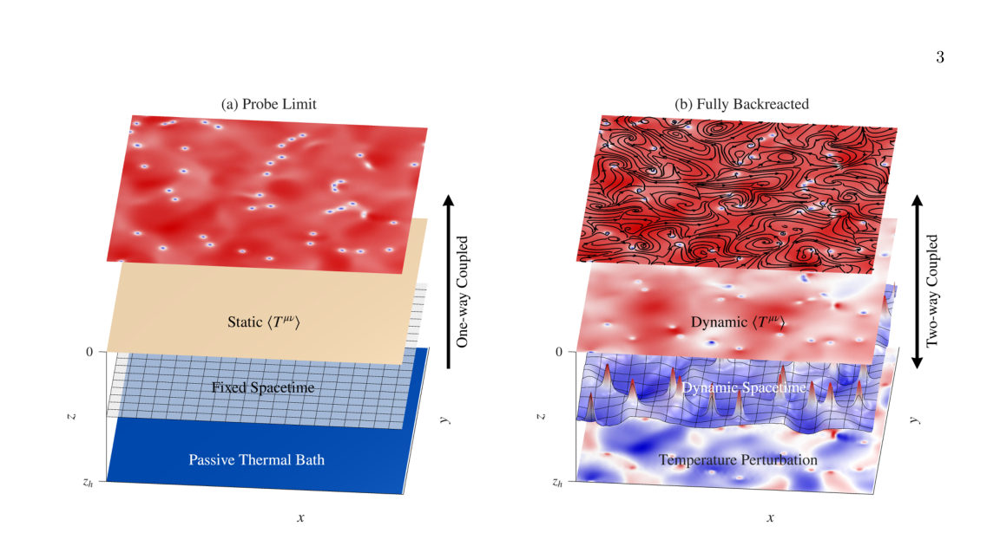
<figcaption class="paper-figure-caption"><b>Fig 1.</b> FIG. 1. Self-consistent holographic modeling of two-fluid dynamics. The schematic contrasts the strictly one-way coupled probe limit (a) with the two-way coupled, fully backreacted model (b). a, In the probe limit, matter fields evolve on a rigid background, restricting the normal fluid to a passive thermal bath without dynamical vortex feedback. b, With full gravitational backreaction, a self-consistent two-way coupling emerges as bulk geometry responds to fluid fields. Top: superfluid condensate overlaid with normal-fluid velocity streamlines. Boundary (z = 0): metric expansion coefficients encode the stress- energy tensor ⟨T µν⟩. Horizon (z = zh): local temperature fluctuations reflect...</figcaption>
</figure>
<figure class="paper-figure-card">
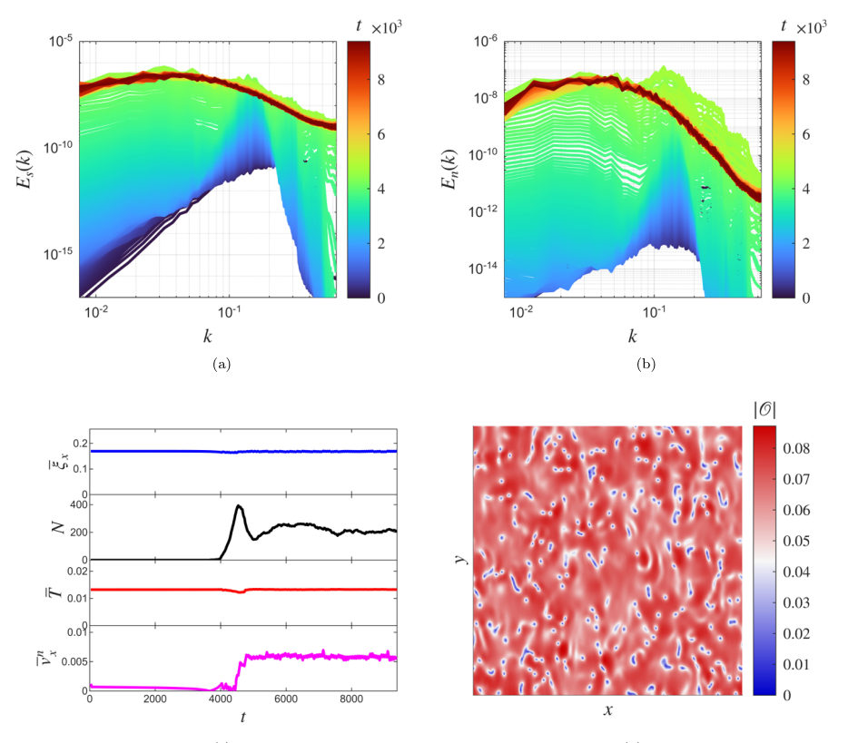
<figcaption class="paper-figure-caption"><b>Fig 2.</b> FIG. 2. Demonstration of statistically steady state with ¯T/Tc = 0.635 and ¯ξx = 0.17. (a,b) Time evolution of the superfluid and normal-fluid energy spectra, Es(k) and En(k), showing relaxation to time-independent distributions after an initial transient. (c) Spatially averaged quantities—mean superfluid velocity ¯ξx, vortex number Nv, effective temperature ¯T, and mean normal-fluid velocity ¯vn x—converge to plateau values with only small fluctuations. The vortex number stabilizes through sustained nucleation-annihilation balance. (d) Snapshot of the condensate magnitude |O| at t ≃9000, illustrating the vortex configuration in the steady state. Together, these panels confirm that the...</figcaption>
</figure>
<figure class="paper-figure-card">
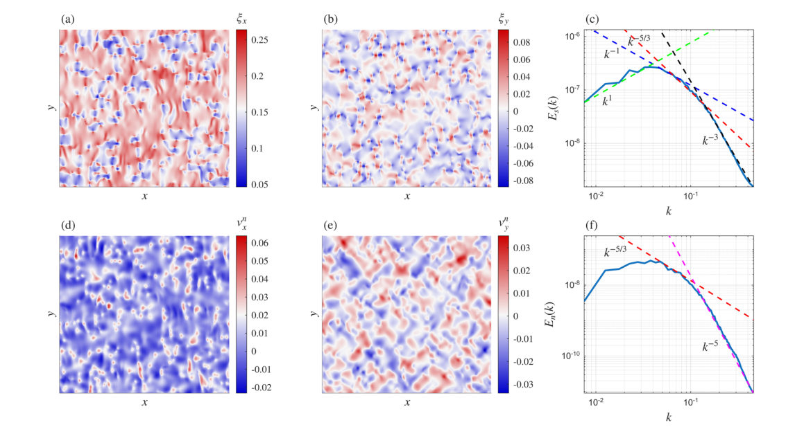
<figcaption class="paper-figure-caption"><b>Fig 3.</b> FIG. 3. Steady-state velocity fields and energy spectra. (a,b) Superfluid velocity components ξx and ξy at t ≃9000. (c) Superfluid energy spectrum Es(k), time-averaged over 100 slices within t ∈[6000, 9000], displaying k1 scaling at large scales, k−1 and k−5/3 at intermediate scales, and k−3 at small scales. (d,e) Normal-fluid velocity components vn x and vn y at t ≃9000. (f) Normal-fluid energy spectrum En(k), averaged over the same interval, showing k−5/3 scaling at intermediate scales and k−5 at small scales. Reference power laws are indicated by dashed lines. For both the superfluid and normal fluid, the spatial distributions of the longitudinal (x) and transverse (y) velocity...</figcaption>
</figure>
<figure class="paper-figure-card">
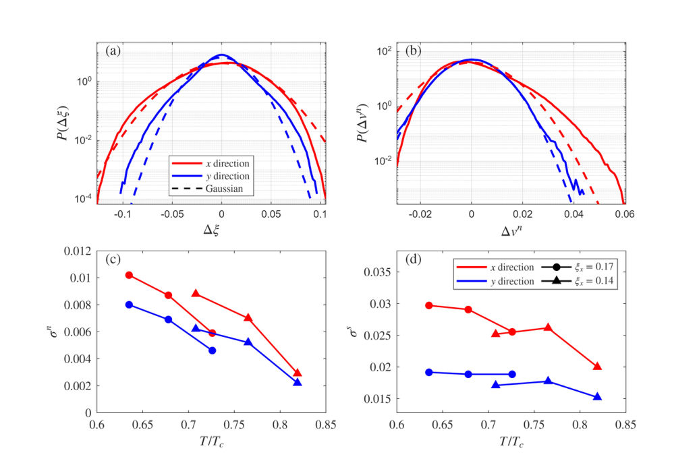
<figcaption class="paper-figure-caption"><b>Fig 4.</b> FIG. 4. Velocity distributions and temperature dependence of fluctuations. (a, b) Probability density functions (PDFs) of velocity fluctuations for the superfluid and normal fluid, P(∆ξ) and P(∆vn) with ∆ξ = ξ −¯ξ, ∆vn = vn −¯vn, accumulated over 100 time slices in the steady state. Both components exhibit pronounced non-Gaussian tails and spatial anisotropy, with fluctuations along the driving direction (x) significantly stronger than in the transverse direction (y); dashed lines denote Gaussian fits for reference. (c, d) Standard deviations of the normal-fluid and superfluid velocity fluctuations, σn and σs, as functions of temperature and driving velocity ¯ξx. The normal-fluid...</figcaption>
</figure>
</div>

<p><strong>Summary.</strong> This work pioneers the use of holographic duality to model quantum turbulence in superfluids, moving beyond phenomenological models. By simulating the fully backreacted system, the authors demonstrate that the normal fluid actively influences the dynamics, yielding non-Gaussian statistics. This establishes a rigorous, first-principles framework for understanding quantum turbulence in cold atomic systems.</p>
<p><strong>Why it may be interesting.</strong> The use of holographic duality to derive transport coefficients and dynamics from first principles is a powerful tool for AMO physicists studying non-equilibrium quantum systems, providing a non-perturbative approach to superfluid dynamics.</p>
<details>
<summary>Detailed structure</summary>
<p><strong>Main problem.</strong> The paper addresses the fundamental challenge of modeling active, two-way coupling between the normal fluid and quantized vortices in quantum turbulence, overcoming historical reliance on phenomenological parameters.</p>
<p><strong>Main result.</strong> The holographic framework successfully models this coupling, revealing that normal-fluid velocity statistics exhibit non-Gaussian tails and spatial anisotropy directly from vortex backreaction, and that temperature suppresses fluctuations via superfluid depletion.</p>
<p><strong>Method.</strong> The authors employ an ab initio holographic simulation using a fully backreacted gravitational model (AdS/CFT correspondence) to solve coupled Einstein-Maxwell-scalar equations in real time.</p>
<p><strong>Model / system.</strong> The system is a superfluid at finite temperature, described by Landau's two-fluid model. The dynamics are simulated holographically, mapping the strongly coupled quantum fluid dynamics to classical gravity in a higher dimension.</p>
<p><strong>Key observables.</strong> Normal-fluid velocity statistics (PDFs), energy spectra ($E_s(k), E_n(k)$), superfluid and normal fluid velocities ($\xi_i, \mathbf{v}_n$), and the superfluid condensate density ($
ho_s$).</p>
<p><strong>Important parameters / regimes.</strong> Temperature ($T$), superfluid condensate density ($
ho_s$), driving velocity ($ar{\xi}_x$), and the ratio of superfluid to total density ($
ho_s/
ho$).</p>
<p><strong>Assumptions / limitations.</strong> The holographic duality provides a rigorous first-principles framework, and the hydrodynamic description is an approximation expected to break down near vortex cores.</p>
<p><strong>Figures summary.</strong> Figures illustrate the comparison between one-way (probe) and two-way (fully backreacted) coupling, show the time evolution of energy spectra and averaged quantities towards steady states, and present the non-Gaussian, anisotropic PDFs of velocity fluctuations.</p>
<p><strong>Paper structure.</strong> The paper establishes the holographic framework, simulates the dynamics in both continuously driven and freely decaying regimes, analyzes the resulting energy spectra and velocity statistics, and concludes by interpreting the physical meaning of the observed non-equilibrium steady states.</p>
</details>
<details>
<summary>Abstract</summary>
<p>The two-fluid model provides a powerful phenomenological framework for superfluids, where components interact through vortex-induced mutual friction. Quantum turbulence in such coupled two-fluid systems has become a central theme in low-temperature physics. However, the fundamental incompatibility between discrete vortex-line and continuum descriptions has historically forced reliance on phenomenological parameters. Here, we present an ab initio holographic simulation of this active two-fluid dynamics. Using a fully backreacted gravitational model, we intrinsically incorporate reciprocal momentum exchange and finite-temperature dissipation without empirical inputs. Contrasting continuously driven and freely decaying turbulence, we uncover pronounced non-Gaussian tails and spatial anisotropy in the normal-fluid velocity statistics, arising directly from the dynamical quantized vortex backreaction. Raising the temperature suppresses normal-fluid velocity fluctuations despite increasing the vortex density. This suppression is unambiguously traced to the thermal depletion of the superfluid condensate. Our results establish holographic duality as a rigorous first-principles framework for quantum turbulence, revealing the active role of the normal fluid far from equilibrium and yielding predictions for ongoing cold-atom and superfluid experiments.</p>
</details>
<p><sub><a href="#top">↑ back to top</a></sub></p>

<p><a id="paper-2609.36511"></a></p>
<h3 id="affine-spin-pencil-factorization-of-generalized-driven-anisotropic-rabi-stark-hamiltonians-in-an-inhomogeneous-orthosymplectic-superalgebra"><a href="http://arxiv.org/abs/2609.36511v1">Affine spin-pencil factorization of generalized driven anisotropic Rabi--Stark Hamiltonians in an inhomogeneous orthosymplectic superalgebra</a></h3>
<p><strong>Authors:</strong> B. M. Rodriguez-Lara, F. H. Maldonado-Villamizar, A. Kafuri, A. Moroz<br>
<strong>Type:</strong> theory · <strong>Category:</strong> other · <strong>PDF:</strong> <a href="https://arxiv.org/pdf/2609.36511v1">https://arxiv.org/pdf/2609.36511v1</a><br>
<strong>Analysis basis:</strong> full PDF text, analyzed in chunks
<strong>Topic relevance:</strong> <code>analog quantum simulation</code> <strong>3/5</strong> · <code>Tavis-Cummings &amp; cavity-many-emitter</code> <strong>2/5</strong></p>
<div class="figure-strip-hint">↔ Scroll figures horizontally</div>
<div class="paper-figures-scroll">
<figure class="paper-figure-card">
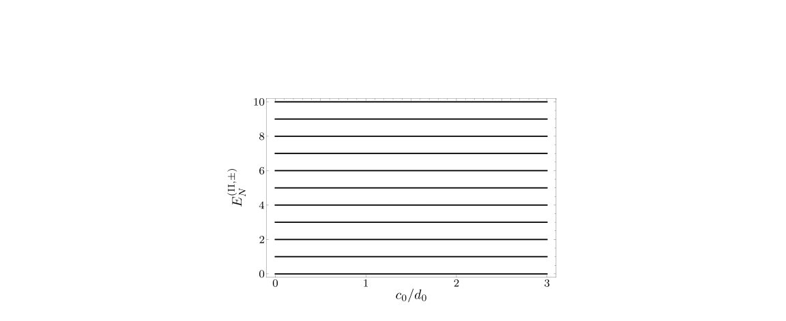
<figcaption class="paper-figure-caption"><b>Fig 1.</b> FIG. 1. Identity–identity spectral branch. Light gray curves show the numerical finite-Fock spectrum of</figcaption>
</figure>
<figure class="paper-figure-card">
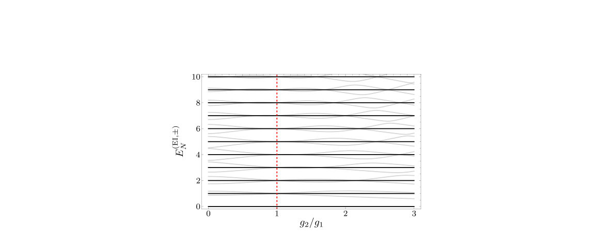
<figcaption class="paper-figure-caption"><b>Fig 2.</b> FIG. 2. Exchange–identity spectral branch. Light gray curves show the numerical finite-Fock spectrum</figcaption>
</figure>
<figure class="paper-figure-card">
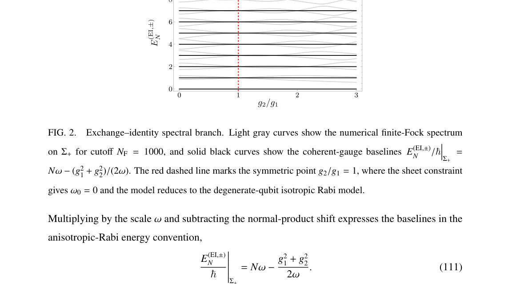
<figcaption class="paper-figure-caption"><b>Fig 3.</b> Figure 2 compares the finite-Fock spectrum on the exchange–identity sheet with the scaled</figcaption>
</figure>
<figure class="paper-figure-card">
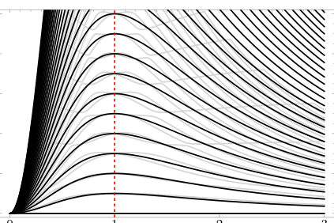
<figcaption class="paper-figure-caption"><b>Fig 4.</b> FIG. 3. Identity–exchange spectral branch. Light gray curves show the numerical finite-Fock spectrum</figcaption>
</figure>
<figure class="paper-figure-card">
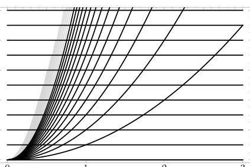
<figcaption class="paper-figure-caption"><b>Fig 5.</b> FIG. 4. Exchange–exchange spectral branches. Light gray curves show the numerical finite-Fock spectrum</figcaption>
</figure>
</div>

<p><strong>Summary.</strong> This theoretical paper develops a supersymmetric factorization method for complex Rabi-Stark Hamiltonians using the inhomogeneous orthosymplectic superalgebra. By analyzing the structure via an affine factor, the authors characterize the system's spectral properties across multiple physical limits. This provides a powerful algebraic tool for understanding driven quantum optical systems.</p>
<p><strong>Why it may be interesting.</strong> This work provides a deep algebraic and structural understanding of complex quantum coupling models (Rabi-Stark), which are central to controlling quantum interactions in modern AMO platforms like trapped ions and superconducting circuits.</p>
<details>
<summary>Detailed structure</summary>
<p><strong>Main problem.</strong> The paper constructs a supersymmetric factorization for generalized driven anisotropic Rabi--Stark Hamiltonians.</p>
<p><strong>Main result.</strong> The factorization successfully characterizes the spectral structure across various parameter regimes, yielding a factor index of two and defining coherent-gauge baselines for the energy spectrum.</p>
<p><strong>Method.</strong> The analysis employs an affine factor $\hat{A} = \hat{C} + \hat{a} \hat{D}$ within the inhomogeneous orthosymplectic superalgebra $\mathfrak{hosp}(2|2)$ to derive factorized Hamiltonians $\hat{H}_{\pm} = \hat{A}^{\dagger}\hat{A}$ and $\hat{A}\hat{A}^{\dagger}$.</p>
<p><strong>Model / system.</strong> The model concerns generalized driven anisotropic Rabi--Stark Hamiltonians, which are analyzed using the algebraic framework of $\mathfrak{osp}(2|2)$ embedded in $\mathfrak{hosp}(2|2)$. The system relates to quantum Rabi models relevant in platforms like trapped-ion simulations.</p>
<p><strong>Key observables.</strong> Zero-energy ground doublet, Witten index of two, coherent-gauge baselines, and the finite-Fock spectrum.</p>
<p><strong>Important parameters / regimes.</strong> Six real pencil parameters constrain the system, defining various limiting cases including the isotropic Rabi model and driven-oscillator families.</p>
<p><strong>Assumptions / limitations.</strong> The analysis assumes the invertibility of the spin matrices $\hat{C}$ and $\hat{D}$ and relies on matching coefficients in the Bargmann differential equation hierarchy to determine baselines.</p>
<p><strong>Figures summary.</strong> Figures compare the finite-Fock spectrum on different factorization sheets (Identity–exchange, Exchange–exchange, Interior) against the derived coherent-gauge baselines.</p>
<p><strong>Paper structure.</strong> The paper develops from standard Rabi models to the full quantum Rabi model, embedding the structure into $\mathfrak{osp}(2|2)$, and finally extending the analysis to the inhomogeneous algebra $\mathfrak{hosp}(2|2)$ using the spin-pencil factorization.</p>
</details>
<details>
<summary>Abstract</summary>
<p>We construct a supersymmetric factorization for generalized driven anisotropic Rabi--Stark Hamiltonians using an affine factor $\hat{A}=\hat{C}+\hat{a}\hat{D}$ in an inhomogeneous orthosymplectic superalgebra, with two real invertible spin matrices $\hat{C}$ and $\hat{D}$. The six real pencil parameters constrain nine Hamiltonian frequencies and one energy offset up to an overall frequency scale. The normal product $\hat{A}^{\dagger}\hat{A}$ has an exact zero-energy ground doublet and, with its antinormal partner $\hat{A}\hat{A}^{\dagger}$, gives a Witten index of two. For distinct pencil roots with finite baseline slopes, coherent gauges define a Bargmann hierarchy and endpoint conditions for exceptional finite-polynomial states. The spin grading organizes four limiting cases, comprising two driven-oscillator families with every baseline exact and the constrained anisotropic-Rabi and Rabi--Stark sheets, which meet at the degenerate-qubit isotropic Rabi model. An aligned interior example adds direct and longitudinal drives, Stark deformation, and intensity-dependent coupling while retaining the factorization.</p>
</details>
<p><sub><a href="#top">↑ back to top</a></sub></p>

<p><a id="paper-2609.36004"></a></p>
<h3 id="digital-quantum-algorithms-for-generating-and-utilizing-spin-squeezed-states"><a href="http://arxiv.org/abs/2609.36004v1">Digital Quantum Algorithms for Generating and Utilizing Spin Squeezed States</a></h3>
<p><strong>Authors:</strong> Mingru Yang, Ruby Wei, Chao Yin<br>
<strong>Type:</strong> both · <strong>Category:</strong> quantum information and computing · <strong>PDF:</strong> <a href="https://arxiv.org/pdf/2609.36004v1">https://arxiv.org/pdf/2609.36004v1</a><br>
<strong>Analysis basis:</strong> full PDF text, analyzed in chunks
<strong>Topic relevance:</strong> <code>QC/QI experiment</code> <strong>3/5</strong> · <code>quantum measurements</code> <strong>1/5</strong> · <code>quantum optics experiment</code> <strong>1/5</strong></p>
<div class="figure-strip-hint">↔ Scroll figures horizontally</div>
<div class="paper-figures-scroll">
<figure class="paper-figure-card">
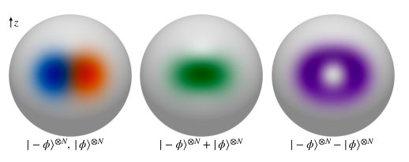
<figcaption class="paper-figure-caption"><b>Fig 1.</b> FIG. 1. A sketch of a simple SSS |Φ⟩(middle) in the DM, which is a superposition of two CSSs (left). Flipping the relative phase gives a state close to the W-state [78, 97] in a rotated basis (right), which is not a SSS.</figcaption>
</figure>
<figure class="paper-figure-card">
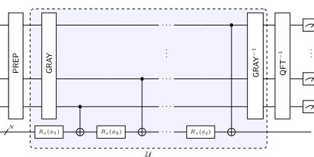
<figcaption class="paper-figure-caption"><b>Fig 2.</b> FIG. 2. An adaptive protocol that prepares a ξ-SSS from |+⟩⊗N.</figcaption>
</figure>
<figure class="paper-figure-card">
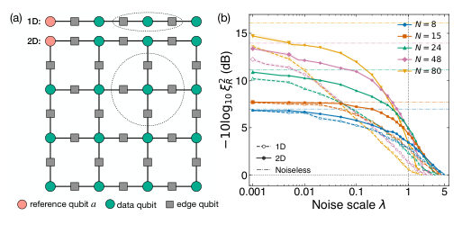
<figcaption class="paper-figure-caption"><b>Fig 3.</b> FIG. 4. (a) Illustration of the Lieb lattice [123] geometry of the 1d and 2d protocol. (b) Wineland spin squeezing pa- rameter ξ2 R obtained from the 1d and 2d protocol versus the noise scale λ for different system sizes N. We switch from the protocol in Fig. 3 (smaller marker) to that in Fig. 2 (larger marker) when tuning down λ. The noise level used in the simulation is set to be λ times (p2, p1, preadout, pidle, pinit) = (0.8, 0.02, 1, 0.001, 0.1)% which are the typical stochastic in- coherent raw noise rates for two- and one-qubit depolarizing errors, classical readout bit flips, idle Pauli errors, and initial- ization errors in the current superconducting qubit devices.</figcaption>
</figure>
</div>

<p><strong>Summary.</strong> This paper develops novel, resource-efficient digital quantum algorithms to create Spin Squeezed States (SSSs) necessary for quantum metrology. By introducing an adaptive circuit protocol, the authors achieve an exponentially improved depth scaling compared to prior methods. The work validates the approach by predicting significant metrological gains on superconducting qubit architectures.</p>
<p><strong>Why it may be interesting.</strong> The work provides concrete, resource-efficient quantum circuit blueprints for generating highly entangled states crucial for quantum sensing, directly impacting the feasibility of near-term quantum metrology experiments.</p>
<details>
<summary>Detailed structure</summary>
<p><strong>Main problem.</strong> The paper addresses the challenge of developing efficient digital quantum algorithms to generate and utilize Spin Squeezed States (SSSs) for quantum metrology.</p>
<p><strong>Main result.</strong> They introduce an adaptive local-circuit protocol achieving a depth scaling of $O(\log 1/\xi)$, which is exponentially faster than non-adaptive methods, and demonstrate a predicted metrological gain of 4.2 dB.</p>
<p><strong>Method.</strong> The core method is an adaptive local-circuit protocol combining block encoding, Linear Combination of Unitaries (LCU), and phase estimation, complemented by theoretical lower bounds derived from entanglement entropy.</p>
<p><strong>Model / system.</strong> The system is modeled using N qubits, focusing on preparing SSSs within the Dicke manifold. The protocols are designed for near-term digital quantum devices, specifically mentioning superconducting qubits.</p>
<p><strong>Key observables.</strong> Squeezing parameter $\xi$, metrological gain (e.g., 4.2 dB), circuit depth $D$, and bipartite entanglement entropy $H_{\epsilon}^{\max}(
ho_L)$.</p>
<p><strong>Important parameters / regimes.</strong> Squeezing parameter $\xi$, system size $N$, and the depth scaling $D = O(\log 1/\xi)$.</p>
<p><strong>Assumptions / limitations.</strong> The depth analysis assumes the final state resides in the Dicke manifold (DM); the simulation relies on approximating the true correlated-disorder model with an independent-bond Random-Bond Ising Model (RBIM).</p>
<p><strong>Figures summary.</strong> Figures illustrate the target SSS state, the adaptive protocol structure involving ancillae and rotations, and simulation results showing metrological gain and acceptance rate versus noise scale.</p>
<p><strong>Paper structure.</strong> The paper establishes the problem by comparing analog vs. digital approaches, presents the adaptive protocol (Theorem 1), proves the optimal depth scaling via entanglement bounds (Theorem 2), and discusses error mitigation using techniques like the MWPM decoder.</p>
</details>
<details>
<summary>Abstract</summary>
<p>Spin squeezed states (SSSs) are conventionally viewed as analog resources for quantum metrology. Here we develop algorithms to efficiently generate and exploit SSSs on a digital quantum computer. We introduce an adaptive local-circuit protocol that prepares SSSs with squeezing parameter $ξ$ in depth $\mathrm{O}\left(\log{1/ξ}\right)$, yielding an exponential improvement over non-adaptive approaches. We prove that this depth is optimal for permutation symmetric SSSs by deriving a matching lower bound on entanglement entropy. We further leverage the squeezing paradigm to deterministically prepare the Dicke states using asymptotically fewer resources than prior methods. Remarkably, classical simulations of our preparation protocols under realistic noise models predicts a metrological gain of 4.2 dB beyond the standard quantum limit with 55 superconducting qubits in total including ancillae. Our work paves the way for performing quantum metrology on near-term digital quantum devices.</p>
</details>
<p><sub><a href="#top">↑ back to top</a></sub></p>

<p><a id="paper-2609.37620"></a></p>
<h3 id="optimal-interferometric-certification-of-multi-photon-indistinguishability"><a href="http://arxiv.org/abs/2609.37620v1">Optimal interferometric certification of multi-photon indistinguishability</a></h3>
<p><strong>Authors:</strong> Marco Robbio, Michał Oszmaniec, Nicolas J. Cerf, Ernesto Galvão, Leonardo Novo<br>
<strong>Type:</strong> theory · <strong>Category:</strong> quantum information and computing · <strong>PDF:</strong> <a href="https://arxiv.org/pdf/2609.37620v1">https://arxiv.org/pdf/2609.37620v1</a><br>
<strong>Analysis basis:</strong> full PDF text, analyzed in chunks
<strong>Topic relevance:</strong> <code>interference shaping light</code> <strong>3/5</strong> · <code>quantum measurements</code> <strong>2/5</strong></p>
<div class="figure-strip-hint">↔ Scroll figures horizontally</div>
<div class="paper-figures-scroll">
<figure class="paper-figure-card">
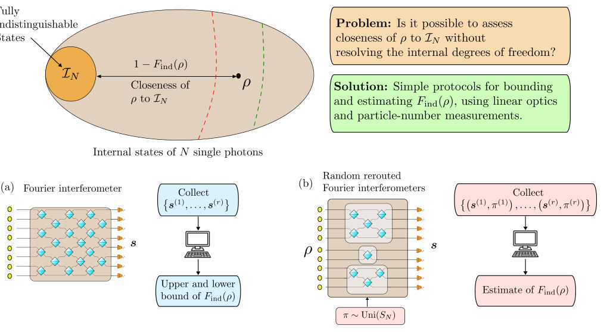
<figcaption class="paper-figure-caption"><b>Fig 1.</b> FIG. 1: We consider an unknown state ρ describing internal states of an N-photon input with exactly one photon in each of N spatial modes. We seek to quantify its closeness to the set of states describing perfectly indistinguishable photon states, without resolving the internal degrees of freedom. This closeness is measured by the fidelity Find(ρ) to the closest perfectly indistinguishable state. Top: Geometric representation of the certification problem. Bottom left (a): The cyclic protocol uses a single fixed Fourier interferometer followed by photon-number-resolving detection. Post-processing the observed output patterns provides upper and lower bounds (for independent photon sources) on...</figcaption>
</figure>
<figure class="paper-figure-card">
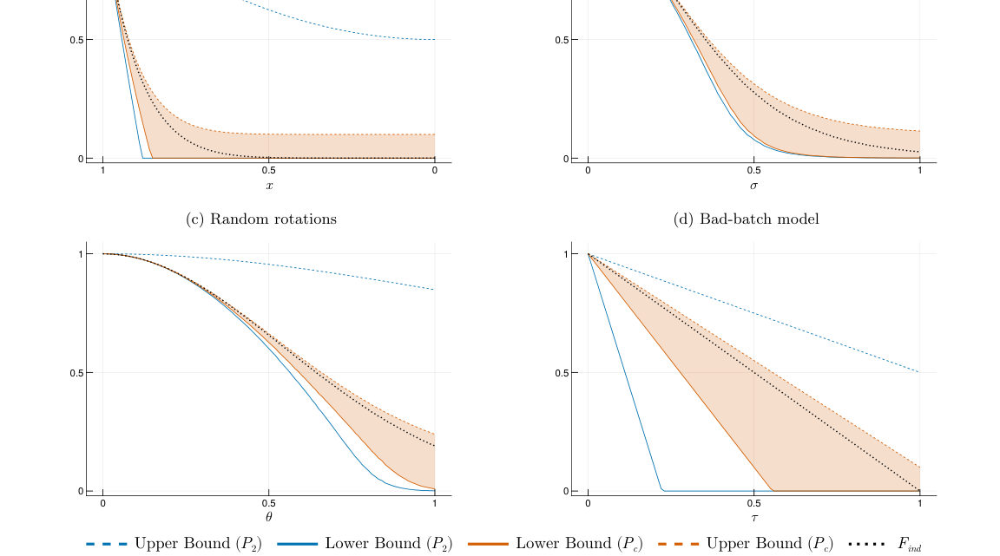
<figcaption class="paper-figure-caption"><b>Fig 2.</b> FIG. 2: Comparison of certification bounds across representative noise models. All panels show N = 10 photons. The indistinguishability fidelity Find is compared with bounds inferred from the cyclic weight Pc and from the average pairwise Hong–Ou–Mandel statistic P2. (a) X model: Pure internal states have a uniform pairwise overlap ⟨ϕi|ϕj⟩= x for i ̸= j, interpolating between mutually orthogonal and identical states. (b) Random time delay: Gaussian temporal wave packets acquire random arrival-time offsets, modeling timing jitter. (c) Random rotations: Initially identical pure internal states undergo independent random unitary rotations, modeling coherent internal-state mismatch. (d)...</figcaption>
</figure>
</div>

<p><strong>Summary.</strong> This paper introduces two novel, efficient protocols to certify the indistinguishability fidelity of multi-photon quantum states. These methods generalize the Hong-Ou-Mandel effect and provide provably optimal sampling complexity for estimating this crucial resource. The development makes high-fidelity characterization of photonic quantum states accessible to current experimental technologies.</p>
<p><strong>Why it may be interesting.</strong> This work provides rigorous, operationally meaningful methods to quantify a fundamental resource (indistinguishability) in photonic quantum information, directly applicable to quantum communication and computation.</p>
<details>
<summary>Detailed structure</summary>
<p><strong>Main problem.</strong> The paper develops efficient and experimentally friendly protocols to estimate or bound the fidelity of an N-photon state to the closest perfectly indistinguishable state.</p>
<p><strong>Main result.</strong> Two protocols are presented: one for separable states using a Fourier interferometer, and a randomized one for arbitrary states, both achieving optimal sample scaling of O(1/epsilon).</p>
<p><strong>Method.</strong> The methods generalize the Hong-Ou-Mandel test by developing protocols based on photon-number measurements and randomized linear-optical interferometers.</p>
<p><strong>Model / system.</strong> The system involves N photons in an interferometer setting, characterized by the fidelity F_ind, which measures how close the state is to perfect indistinguishability.</p>
<p><strong>Key observables.</strong> Fidelity to the closest indistinguishable state (F_ind), the reduced external state (Omega_ext(rho)), and various expectation values derived from interferometry.</p>
<p><strong>Important parameters / regimes.</strong> The required sample complexity scales optimally as O(1/epsilon) for certification.</p>
<p><strong>Assumptions / limitations.</strong> The protocols are designed to be operationally motivated and experimentally practical, overcoming limitations of previous methods that required strong structural assumptions.</p>
<p><strong>Figures summary.</strong> Figure 1 illustrates the certification problem, showing the geometric representation and detailing the setups for both the cyclic (fixed Fourier interferometer) and randomized (sampling random permutations) protocols.</p>
<p><strong>Paper structure.</strong> The paper first establishes the theoretical definition of indistinguishability fidelity, then details the two distinct measurement protocols (cyclic and randomized) to bound or estimate this fidelity, culminating in complexity analysis showing optimal scaling.</p>
</details>
<details>
<summary>Abstract</summary>
<p>Multiphoton indistinguishability is a key resource for photonic quantum technologies, yet its characterization typically relies on resource-intensive methods. In this work, we develop two efficient and experimentally friendly protocols to estimate or bound the fidelity $F_{\mathrm{ind}}$ of an $N$-photon state to the closest perfectly indistinguishable state. The first protocol applies to sources preparing separable states, uses a single Fourier interferometer together with photon-number-resolving detection, and yields tight two-sided bounds on $F_{\mathrm{ind}}$. The second protocol combines randomized implementations of linear-optical interferometers with photon counting, enabling direct estimation of $F_{\mathrm{ind}}$ for arbitrary $N$-photon states. Both protocols can certify $F_{\mathrm{ind}} = 1 - \mathcal{O}(ε)$ using provably optimal $\mathcal{O}(1/ε)$ samples, in contrast to previous approaches which required prior assumptions on the model of partial distinguishability. Our methods, based on a multiphoton generalization of the Hong-Ou-Mandel test, bring the rigorous and operationally meaningful certification of multiphoton indistinguishability within reach of current photonic technologies.</p>
</details>
<p><sub><a href="#top">↑ back to top</a></sub></p>

<p><a id="paper-2609.37436"></a></p>
<h3 id="phase-separation-morphology-and-metastability-in-the-three-dimensional-active-potts-model"><a href="http://arxiv.org/abs/2609.37436v1">Phase separation, morphology, and metastability in the three-dimensional active Potts model</a></h3>
<p><strong>Authors:</strong> Aditya Kumar Dutta, Raja Paul<br>
<strong>Type:</strong> theory · <strong>Category:</strong> statistical mechanics · <strong>PDF:</strong> <a href="https://arxiv.org/pdf/2609.37436v1">https://arxiv.org/pdf/2609.37436v1</a><br>
<strong>Analysis basis:</strong> full PDF text, analyzed in chunks
<strong>Topic relevance:</strong> <code>non-equilibrium universality</code> <strong>3/5</strong> · <code>driven-dissipative phase transition</code> <strong>1/5</strong> · <code>methods for driven-dissipative</code> <strong>1/5</strong></p>
<div class="figure-strip-hint">↔ Scroll figures horizontally</div>
<div class="paper-figures-scroll">
<figure class="paper-figure-card">
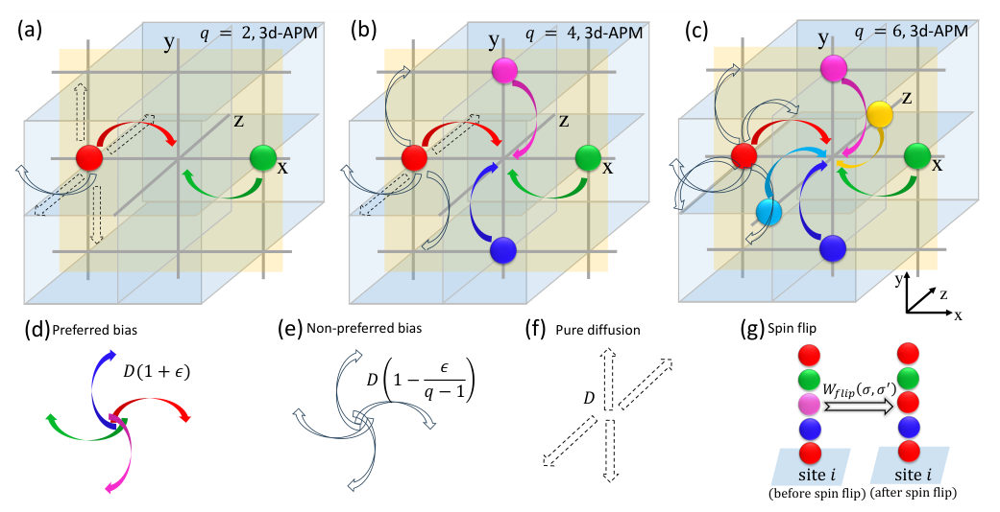
<figcaption class="paper-figure-caption"><b>Fig 1.</b> Figure 1. Schematics of 3d-active Potts model dynamics. (a–c) Particles hop between nearest-neighbor lattice sites in the (a) 2-state, (b) 4-state and (c) 6-state 3d active Potts model. Several particles can occupy the same site. Filled curved arrows denote preferred hopping, while open arrows indicate non-preferred hopping. For the q = 2 and q = 4 models, active hopping occurs in the xy plane; the q = 6 model also has active hopping along z. Dashed arrows represent pure diffusion. For clarity, hopping and diffusion are illustrated only for the red particle. (d–f) Schematic of the corresponding hopping and diffusion rates. (g) Local spin reversal from state σ to state σ′ occurs with rate...</figcaption>
</figure>
<figure class="paper-figure-card">
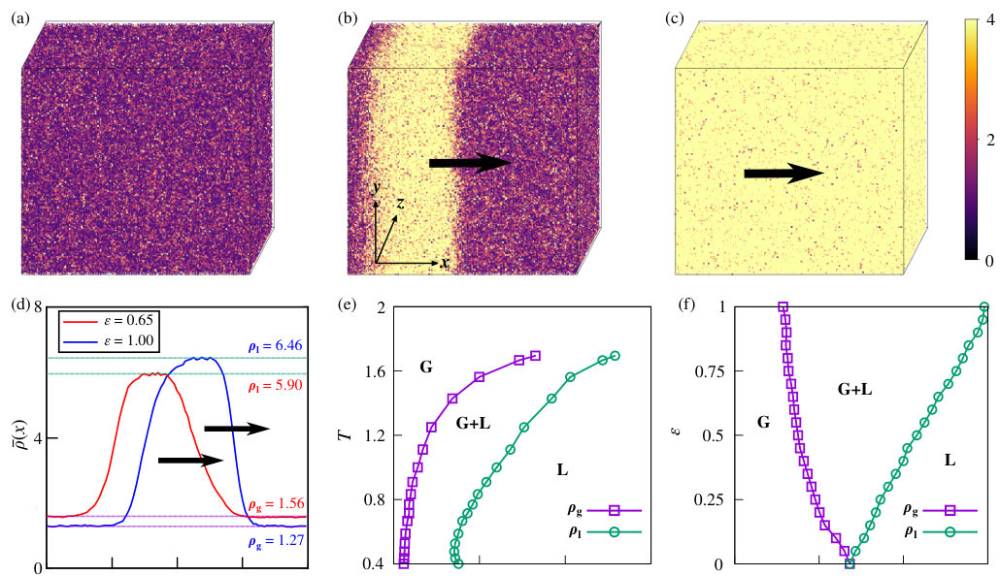
<figcaption class="paper-figure-caption"><b>Fig 2.</b> Figure 2. 2-state 3d-APM: (a–c) Snapshots in 96 × 96 × 96 domains with the colorbar representing site density, showing (a) gas (ρ0 = 1), (b) gas-liquid coexistence (ρ0 = 3) and (c) liquid (ρ0 = 8) phases for β = 1, ϵ = 1. (d) YZ-averaged density profiles ¯ρ(x) of the coexistence regime for two self-propulsion speeds (β = 1). (e) Temperature-density (T −ρ) phase diagram for ϵ = 0.9, and (f) Velocity-density (ϵ −ρ) phase diagram for β = 1.</figcaption>
</figure>
<figure class="paper-figure-card">
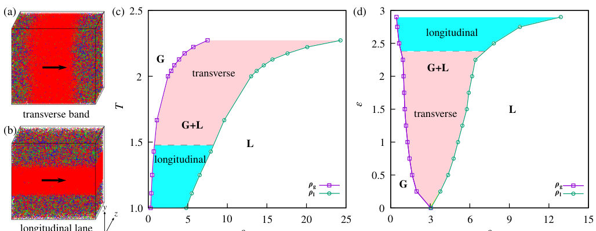
<figcaption class="paper-figure-caption"><b>Fig 3.</b> Figure 3. 4-state 3d-APM: Orientational snapshots: (a) showing transverse band movement at low propulsion (ϵ = 1) and (b) showing longitudinal lane movement at high propulsion (ϵ = 2.5) for ρ = 3, β = 0.7 in a 96 × 96 × 96 domain. Color mapping: right (σ = 1, red); up (σ = 2, blue); left (σ = 3, green); down (σ = 4, magenta). (c) Temperature-density (T −ρ) phase diagram for ϵ = 2.1, and (d) Velocity-density (ϵ −ρ) phase diagram for β = 0.7.</figcaption>
</figure>
<figure class="paper-figure-card">
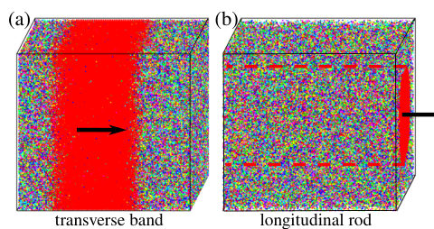
<figcaption class="paper-figure-caption"><b>Fig 4.</b> Figure 4. 6-state 3d-APM: Orientational snapshots show- ing: (a) transverse band movement at low propulsion (ϵ = 2.5) and (b) longitudinal rod movement at high propulsion (ϵ = 4.5) for ρ = 2.5, β = 0.6 in a 64 × 64 × 64 system. The dotted lines indicate the extent of the rod. Color mapping: right (σ = 1, red); up (σ = 2, blue); left (σ = 3, green); down (σ = 4, magenta); front (σ = 5, yellow); behind (σ = 6, cyan).</figcaption>
</figure>
<figure class="paper-figure-card">
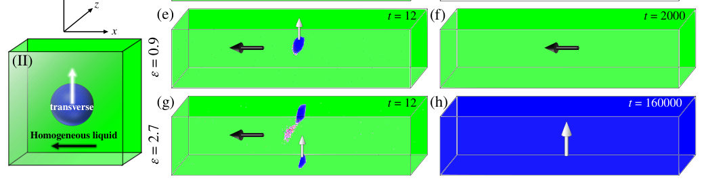
<figcaption class="paper-figure-caption"><b>Fig 5.</b> Figure 5. Time evolution and steady states following droplet excitation in the 4-state 3d-APM (I), (II) Schematics illustrating the insertion of (I) counterpropagating and (II) transversely propagating droplets into a homogeneous liquid back- ground. Early-time (a, c, e, g) and steady-state (b, d, f, h) snapshots demonstrate the outcomes: (a, b) At low self-propulsion bias (ϵ = 0.9), a counterpropagating droplet dissolves into the background. (c, d) At high bias (ϵ = 2.7), it forms a persistent slab state comprising the droplet state (red) and background (green). (e, f) A transversely propagating droplet at low bias (ϵ = 0.9) similarly dissipates. (g, h) At high bias (ϵ = 2.7), the...</figcaption>
</figure>
</div>

<p><strong>Summary.</strong> This paper analyzes the phase behavior of the 3D active Potts model, a system modeling interacting particles with internal states and self-propulsion. Using Monte Carlo simulations and hydrodynamic theory, the authors map out phase diagrams and show how the dense phase morphology evolves from slabs to rods depending on propulsion speed. Crucially, they demonstrate that the ordered liquid phase is metastable, easily disrupted by external perturbations.</p>
<p><strong>Why it may be interesting.</strong> The study of active matter models like the APM provides insights into non-equilibrium phase transitions and pattern formation, which are crucial topics in modern statistical mechanics and complex systems.</p>
<details>
<summary>Detailed structure</summary>
<p><strong>Main problem.</strong> The study investigates phase separation, morphology, and metastability in the three-dimensional active Potts model (APM).</p>
<p><strong>Main result.</strong> The 3D APM exhibits distinct phase behaviors (gaseous, liquid, coexistence) whose morphology (slab vs. cylindrical) changes with propulsion speed, and the polar liquid phase is shown to be metastable against droplet perturbations.</p>
<p><strong>Method.</strong> The research employs Monte Carlo simulations and derives hydrodynamic equations by expanding the master equation in the continuum limit.</p>
<p><strong>Model / system.</strong> The system is the three-dimensional active Potts model (APM) on a cubic lattice with $q=2, 4,$ or $6$ orientational states. Dynamics are governed by spin-flipping rates and particle hopping rates biased by self-propulsion.</p>
<p><strong>Key observables.</strong> Steady-state phase diagrams, density profiles ($ar{
ho}(x)$), and the morphology of the dense phase (slab, rod, cylinder).</p>
<p><strong>Important parameters / regimes.</strong> Number of states ($q$), temperature ($eta$), average density ($
ho$), and self-propulsion bias ($\epsilon$).</p>
<p><strong>Assumptions / limitations.</strong> The analysis extends known 2D results to 3D and utilizes hydrodynamic approximations for the density evolution.</p>
<p><strong>Figures summary.</strong> Figures illustrate schematics of hopping rates, density profiles showing phase separation, and time evolution snapshots demonstrating morphology changes (slab to rod) and the effect of droplet excitations.</p>
<p><strong>Paper structure.</strong> The paper first establishes the model dynamics and then analyzes the phase behavior across different $q$ values. It progresses from steady-state phase diagrams to detailed analyses of morphology changes with propulsion bias, culminating in stability tests using artificial droplet perturbations.</p>
</details>
<details>
<summary>Abstract</summary>
<p>We study the three-dimensional active Potts model (APM) on a cubic lattice with 2, 4, and 6 orientational states. The steady-state phase diagrams exhibit low-density gaseous, high-density polar liquid, and liquid--gas coexistence phases, with the phase behavior controlled by density, temperature, and propulsion speed and retaining the main features of the previously studied two-dimensional APM. At weak propulsion, the dense phase forms a slab perpendicular to its direction of motion. With increasing propulsion speed, this morphology persists for the 2-state model, whereas the dense phases for 4 and 6 states reorient and propagate along their longitudinal direction. For the 6-state model, the reoriented dense phase further develops a cylindrical morphology. We also examine the stability of polar liquids against artificially introduced droplets using microscopic simulations and coarse-grained hydrodynamic equations. At high propulsion speeds, counter-propagating droplets can partially modify the initial polar state, while transverse droplets can completely alter it, demonstrating the metastable nature of polar liquids in the three-dimensional active Potts model.</p>
</details>
<p><sub><a href="#top">↑ back to top</a></sub></p>

<p><a id="paper-2609.37592"></a></p>
<h3 id="quantum-statistical-thermal-engine-at-the-bcs-bec-crossover"><a href="http://arxiv.org/abs/2609.37592v1">Quantum Statistical Thermal Engine at the BCS-BEC crossover</a></h3>
<p><strong>Authors:</strong> Santiago Henríquez Lira, Felipe Isaule, Martín HvE Groves, Francisco J. Peña, Patricio Vargas, Thomás Fogarty<br>
<strong>Type:</strong> theory · <strong>Category:</strong> statistical mechanics · <strong>PDF:</strong> <a href="https://arxiv.org/pdf/2609.37592v1">https://arxiv.org/pdf/2609.37592v1</a><br>
<strong>Analysis basis:</strong> full PDF text, analyzed in chunks
<strong>Topic relevance:</strong> <code>Keldysh / 2PI / non-Gaussian methods</code> <strong>3/5</strong> · <code>analog quantum simulation</code> <strong>1/5</strong> · <code>methods for driven-dissipative</code> <strong>1/5</strong></p>
<div class="figure-strip-hint">↔ Scroll figures horizontally</div>
<div class="paper-figures-scroll">
<figure class="paper-figure-card">
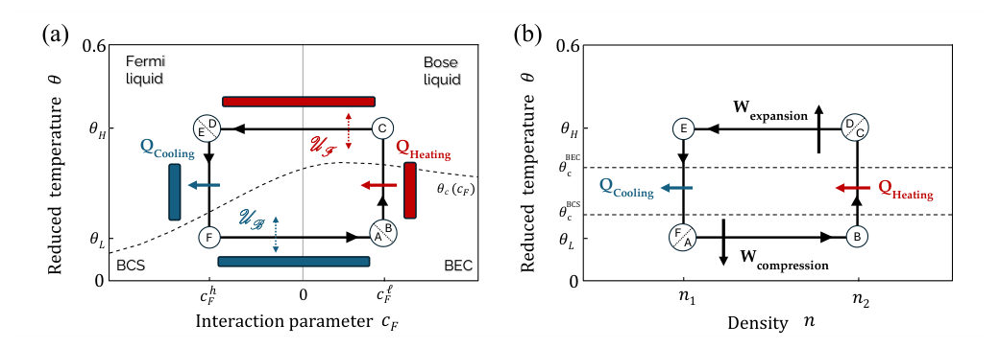
<figcaption class="paper-figure-caption"><b>Fig 1.</b> FIG. 1. Illustration of the cycle at the BCS-BEC crossover, with cF = (kF a)−1 and θ = T/EF . The cycle consists of: adiabatic compression (A–B), isochoric heating (B–C), a hot statistical isotherm (C–D), adiabatic expansion (D–E), isochoric cooling (E–F), and a cold statistical isotherm (F–A). Strokes which include coupling to the hot and cold reservoirs, are indicated by the red and blue colors, respectively. (a) Trajectory in the (θ, cF ) plane, showing the initial (cℓ F ) and target (ch F ) branches relative to the superfluid transition θc = Tc/EF (dashed curve); U indicates the statistical stroke, where both heat and work are exchanged. (b) Trajectory in the (θ, n) plane, showing the...</figcaption>
</figure>
<figure class="paper-figure-card">
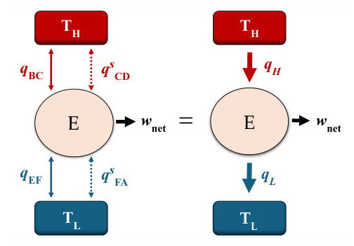
<figcaption class="paper-figure-caption"><b>Fig 2.</b> FIG. 2. Equivalent flow diagram of the statistical thermal cycle as a heat engine. The effective heats are resolved at the hot and cold reservoirs according to qH = qBC + qCD and qL = qEF + qFA, respectively.</figcaption>
</figure>
<figure class="paper-figure-card">
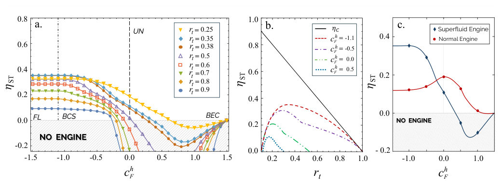
<figcaption class="paper-figure-caption"><b>Fig 3.</b> FIG. 3. Efficiency at the BCS–BEC crossover, ηST = wnet/|qH|, for fixed compression ratio rc = 1. (a) The target branch ch F of the cycle is moved from the BEC side, to unitarity (UN, dashed line), the BCS phase and the Fermi liquid (FL) regime for different rt = TL/TH. (b) Dependence of ηST on rt, compared with the Carnot efficiency ηC. All calculations in (a) and (b) use cℓ F = 1.5, and θL = 0.1. (c) Superfluid Engine (θL = 0.1 rt = 0.35) is compared with Normal Engine (θL = 0.3, rt = 0.59), with T BEC c = 0.26EF for cF = 1.5.</figcaption>
</figure>
<figure class="paper-figure-card">
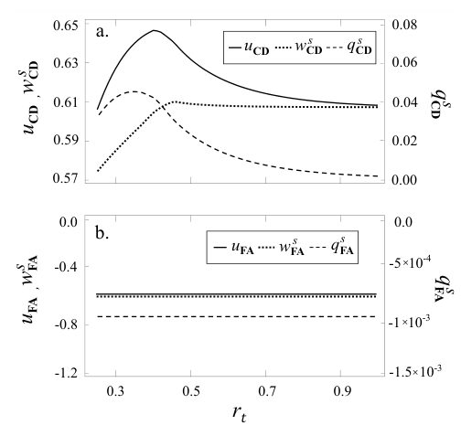
<figcaption class="paper-figure-caption"><b>Fig 4.</b> FIG. 4. First law balance. (a) The statistical hot stroke (C →D). (b) The statistical cold stroke (F →A). The inter- nal energy us, statistical heat qs and statistical work ws are shown as functions of rt = TL/TH. The displayed calculations use rc = 1, cℓ F = 1.5, ch F = −0.4, and θL = 0.1.</figcaption>
</figure>
<figure class="paper-figure-card">
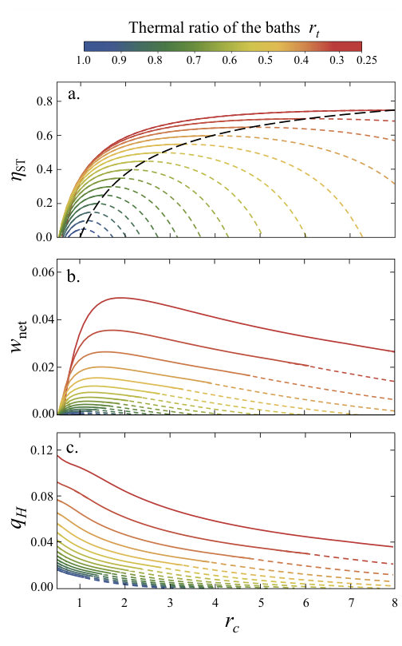
<figcaption class="paper-figure-caption"><b>Fig 5.</b> FIG. 5. (Color online). Performance of the ST-Engine as a function of the compression ratio rc for different values of rt = TL/TH, as indicated by the colorbar. (a) Efficiency ηST = wnet/qH. The black dashed line displays the Otto efficiency ηOtto = 1 −r−2/3 c . (b) Net work output wnet. The work displays a maximum at an optimal compression ratio ropt c . (c) Effective heat supplied qH. In all the panels, the solid colored curves consider cycles where TB &lt; TH, while the dotted colored curves consider cycles where TB &gt; TH. All the displayed calculations use cℓ F = 1.5, ch F = −1.1, and θL = 0.1.</figcaption>
</figure>
</div>

<p><strong>Summary.</strong> This work develops a quantum heat engine model based on a Fermi gas undergoing the BCS-BEC crossover. By analyzing a specialized Statistical Thermal Cycle (STC) using the FRG formalism, the authors demonstrate that the engine's performance is dictated by the gas's quantum statistics, not just volume changes. This allows the system to function as a versatile machine with tunable efficiency.</p>
<p><strong>Why it may be interesting.</strong> It provides a concrete, tunable model for quantum thermal machines, showing how fundamental many-body physics (BCS-BEC crossover) can be harnessed as a thermodynamic resource, which is highly relevant to quantum thermodynamics.</p>
<details>
<summary>Detailed structure</summary>
<p><strong>Main problem.</strong> The paper proposes and analyzes a quantum heat engine that operates by exploiting the internal quantum statistical structure of the working medium across the BCS-BEC crossover.</p>
<p><strong>Main result.</strong> The engine can function as a versatile machine (engine, refrigerator, accelerator, or heater) because the work extraction relies on the interaction-driven changes in the gas's statistical character, achieving efficiencies up to 38%.</p>
<p><strong>Method.</strong> The study employs the Functional Renormalization Group (FRG) formalism to derive the equation of state non-perturbatively, followed by the construction and analysis of a Statistical Thermal Cycle (STC).</p>
<p><strong>Model / system.</strong> The system is a three-dimensional Fermi gas with two spin components interacting via s-wave contact interactions, allowing tuning between BCS superfluid and BEC molecular regimes.</p>
<p><strong>Key observables.</strong> Efficiency ($\eta_{ST}$), net work ($w_{net}$), heat flows ($q_H, q_L$), and the energy per particle ($e$).</p>
<p><strong>Important parameters / regimes.</strong> Scattering length ($a$), density ($n$), temperature ($T$), and the dimensionless interaction parameter ($c_F = 1/(k_F a)$).</p>
<p><strong>Assumptions / limitations.</strong> The analysis relies on a truncated ansatz within the FRG framework, and the cycle is analyzed by combining isentropic, isochoric, and isothermal statistical strokes.</p>
<p><strong>Figures summary.</strong> Figures map the operational regimes (Engine, Refrigerator, Accelerator, Heater) across the BCS-BEC crossover and show the dependence of efficiency on interaction parameters.</p>
<p><strong>Paper structure.</strong> The paper first establishes the theoretical framework using FRG to calculate thermodynamics across the crossover. It then details the construction of the six-stroke Statistical Thermal Cycle (STC) and analyzes how the work and heat are exchanged in each stroke, concluding with a comprehensive mapping of the machine's operational versatility.</p>
</details>
<details>
<summary>Abstract</summary>
<p>We propose a quantum heat engine based on a two-component Fermi gas with s-wave contact interaction, operating across the BCS-BEC crossover. The work is extracted from the statistical properties of the gas, which are controlled by the interaction, rather than relying solely on compression and expansion stages. Using the functional renormalization group formalism, we obtain the equation of state in a non-perturbative form along the crossover, encompassing the superfluid-normal phase transition. The cycle combines isentropic density strokes, isochoric thermalization, and isothermal interaction sweeps. This construction makes it possible to integrate features of both Otto and Carnot cycles, in which the system simultaneously saturates both efficiency limits without the net work vanishing. In the absence of density variations, the cycle reduces to a statistical Stirling-like engine, in which the work generated arises exclusively from the interaction, achieving efficiencies up to $38\%$. A pronounced asymmetry emerges through the crossover, giving rise to distinct operating regimes depending on the trajectory followed in the phase diagram. Consequently, the same architecture can be tuned to function as an engine, refrigerator, accelerator, or heater. These findings highlight pairing correlations as a versatile thermodynamic resource for quantum heat machines.</p>
</details>
<p><sub><a href="#top">↑ back to top</a></sub></p>

<p><a id="paper-2609.36994"></a></p>
<h3 id="topological-pseudo-goldstone-modes-from-weakly-broken-dipole-conservation"><a href="http://arxiv.org/abs/2609.36994v1">Topological Pseudo-Goldstone Modes from Weakly Broken Dipole Conservation</a></h3>
<p><strong>Authors:</strong> Yan-Guang Yue, Jie Lou, Yan Chen<br>
<strong>Type:</strong> theory · <strong>Category:</strong> quantum gases · <strong>PDF:</strong> <a href="https://arxiv.org/pdf/2609.36994v1">https://arxiv.org/pdf/2609.36994v1</a><br>
<strong>Analysis basis:</strong> full PDF text, analyzed in chunks
<strong>Topic relevance:</strong> <code>analog quantum simulation</code> <strong>3/5</strong> · <code>quantum measurements</code> <strong>2/5</strong></p>
<div class="figure-strip-hint">↔ Scroll figures horizontally</div>
<div class="paper-figures-scroll">
<figure class="paper-figure-card">
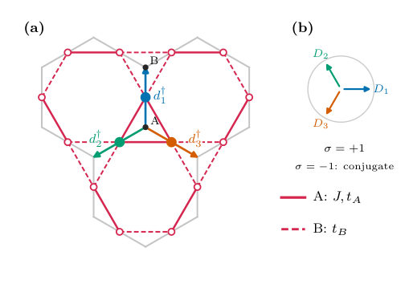
<figcaption class="paper-figure-caption"><b>Fig 1.</b> FIG. 1. Geometry and chiral order. (a) Three complete honeycomb hexagons (gray), with dipole orbitals at their bond centers. Arrows show the three central dipole vectors eν = 2δν; their sum vanishes. Solid and dashed kagome links belong to A and B triangles, respectively. In the benchmark model, only A triangles carry the three-body term J; flavor mixing acts on both. (b) The displayed uniform amplitudes have chirality σ = +1; complex conjugation gives σ = −1. The star term locks their common phase.</figcaption>
</figure>
<figure class="paper-figure-card">

<figcaption class="paper-figure-caption"><b>Fig 2.</b> FIG. 2. From weak breaking to chiral dynamics in the bench- mark completion. (a) Exact Gaussian poles, Eq. (6), and full BdG symbols: pinning scales as √</figcaption>
</figure>
<figure class="paper-figure-card">

<figcaption class="paper-figure-caption"><b>Fig 3.</b> FIG. 3. Lattice topology and local geometry of the benchmark completion. (a) Full positive-frequency bands at λ = 10−4, σ = +1, with lowest-band Chern number C1 = −1 and full vector (−1, +1, 0). Upper zoom: absolute frequencies of the two low bands near Γ along qˆx, resolving their splitting 3λ. (b) Angular-averaged embedded BdG curvature at two mixing strengths and the two-mode form, Eq. (8). Curvature peaks near the polarization crossover q∗= (m/|a|)1/3.</figcaption>
</figure>
<figure class="paper-figure-card">

<figcaption class="paper-figure-caption"><b>Fig 4.</b> FIG. 4. Tensor-current spectroscopy of the benchmark phase doublet. (a,b) Independently evaluated spectra for oppo- site chiralities at the same displayed momentum q = q∗ˆx, λ = 10−4. The helicity preferences reverse; exact time rever- sal relates (σ, q) to (−σ, −q). (c) Independent full BdG cur- vature (lines) and reconstruction from jointly fitted helicity areas (symbols), using noiseless spectra with sharp intrinsic poles. The spectral curves in (a,b) are Gaussian-convolved with standard deviations (sω/∆ω∗, sq/qres) = (0.25, 0.1) and one shared intensity calibration Wref. Here ∆ω∗is the split- ting at q∗ˆx and qres = ∆ω∗/|∂q ¯ω| (SM); each spectrum is centered on its own ¯ωσ. The SM...</figcaption>
</figure>
</div>

<p><strong>Summary.</strong> This theoretical study details how breaking dipole conservation in a neutral dipole condensate leads to the emergence of a topological pseudo-Goldstone mode. The authors use a combination of effective Lagrangian theory and tensor spectroscopy to prove this topology and demonstrate a method to experimentally reconstruct the associated local Berry curvature from measurable spectral responses.</p>
<p><strong>Why it may be interesting.</strong> This work directly connects symmetry breaking, topological invariants (Chern numbers), and observable spectroscopic measurements (dichroism) within the context of interacting quantum gases, providing a concrete model for emergent topological phases.</p>
<details>
<summary>Detailed structure</summary>
<p><strong>Main problem.</strong> The paper establishes a theoretical mechanism showing how weakly breaking dipole conservation in a neutral condensate can induce topological features in its low-energy phase-mode sector.</p>
<p><strong>Main result.</strong> Weak breaking generates a topological lowest band in the pseudo-Goldstone sector, and the parent dipole charges define a tensor current capable of reconstructing the embedded local Berry curvature.</p>
<p><strong>Method.</strong> The analysis involves deriving the low-energy phase dynamics from a parent Hamiltonian, using geometric tomography, and employing tensor spectroscopy to reconstruct the Berry curvature from measurable dichroism signals.</p>
<p><strong>Model / system.</strong> The system is a neutral dipole condensate modeled on a honeycomb lattice, governed by a Hamiltonian that includes hopping, density-interaction, and a three-body star term, perturbed by weak flavor-mixing couplings.</p>
<p><strong>Key observables.</strong> Topological Chern numbers (e.g., $(-1, +1, 0)$), the low-band Berry curvature $\Omega_1(q)$, and the contrast $D_1(q)$ measured via tensor spectroscopy.</p>
<p><strong>Important parameters / regimes.</strong> The analysis identifies three distinct energy/length scales: phase pinning ($\propto \lambda^{1/2}$), chiral splitting ($\propto \lambda$), and curvature radius ($q^* \propto \lambda^{1/3}$).</p>
<p><strong>Assumptions / limitations.</strong> The analysis is performed at zero temperature, and the reconstruction of curvature relies on the low-energy matching regime where finite momentum ($q 
eq 0$) is required.</p>
<p><strong>Figures summary.</strong> Figures illustrate the honeycomb lattice geometry, the transition between pinning and chiral dynamics, and the resulting lattice topology showing the calculated Chern number $C_1 = -1$ and the local Berry curvature $\Omega_1(q)$.</p>
<p><strong>Paper structure.</strong> The paper first analyzes the parent Hamiltonian in the conserving limit, then introduces weak breaking via $H_{mix}$ to derive the low-energy Lagrangian. Subsequently, it details the use of tensor spectroscopy and dichroism measurements to reconstruct the topological Berry curvature, concluding with stability bounds and physical interpretations.</p>
</details>
<details>
<summary>Abstract</summary>
<p>Weakly breaking a continuous symmetry in an ordered phase can convert its Goldstone modes into topological collective bands. We establish this mechanism in a neutral dipole condensate whose conserving parent supports two independent Goldstone phase modes. Weak real flavor mixing pins the phases and selects a chiral condensate. The resulting gyroscopic coupling acts on their winding polarization texture, producing a pseudo-Goldstone sector containing a topological lowest band. Restoring dipole conservation forces the two modes to meet at zero frequency, where their separate band Chern numbers cease to be defined. The same parent dipole charges define a tensor current whose circular response permits model-assisted reconstruction of low-energy embedded local Berry curvature in the benchmark regime. Analytical stability bounds and a large-occupation limit provide a controlled realization of this mechanism.</p>
</details>
<p><sub><a href="#top">↑ back to top</a></sub></p>

<p><a id="paper-2609.37318"></a></p>
<h3 id="a-magnetic-field-insensitive-gate-set-for-trapped-ion-nuclear-spin-qubits"><a href="http://arxiv.org/abs/2609.37318v1">A magnetic-field insensitive gate set for trapped-ion nuclear spin qubits</a></h3>
<p><strong>Authors:</strong> Jonathan Paul Home, Jeremy Flannery, Matteo Mazzanti, Jan Apolin, Shreyans Jain<br>
<strong>Type:</strong> theory · <strong>Category:</strong> other · <strong>PDF:</strong> <a href="https://arxiv.org/pdf/2609.37318v1">https://arxiv.org/pdf/2609.37318v1</a><br>
<strong>Analysis basis:</strong> full PDF text, analyzed in chunks
<strong>Topic relevance:</strong> <code>QC/QI experiment</code> <strong>3/5</strong> · <code>quantum measurements</code> <strong>1/5</strong></p>
<div class="figure-strip-hint">↔ Scroll figures horizontally</div>
<div class="paper-figures-scroll">
<figure class="paper-figure-card">

<figcaption class="paper-figure-caption"><b>Fig 1.</b> FIG. 1. Relevant energy levels and relative splittings.</figcaption>
</figure>
<figure class="paper-figure-card">

<figcaption class="paper-figure-caption"><b>Fig 2.</b> FIG. 2. Simplified level definition used for the discussion of two-qubit gates. The electron spin-flip operators for each transition are labelled as σi ±with superscripts i =⇑, ⇓.</figcaption>
</figure>
<figure class="paper-figure-card">

<figcaption class="paper-figure-caption"><b>Fig 3.</b> FIG. 3. Two qubit gate schemes. a) The two-tone scheme involves microwave dressing fields applied ±δ detuned from the ⇑electron spin flip transition. This gate can be used to perform a phase gate on the nuclear spin, but the atom leaves the pure nuclear spin encoding during the gate. b) The four- tone gate uses drives on both electron spin-flip transitions simultaneously, with the same strength. The only difference is that the two tones driving the ⇓transition have a relative phase which is offset from that of the two tones for the ⇑ transition π/2. This ensures that the Hamiltonian acting on the nuclear spin states has a force direction which depends on the nuclear spin, thus allowing a...</figcaption>
</figure>
</div>

<p><strong>Summary.</strong> This paper details a method to implement fast, high-fidelity two-qubit gates for nuclear spin qubits in trapped ions. By utilizing a four-tone microwave drive, the authors overcome the inherent slowness of nuclear spin manipulation while ensuring the gate operation remains robust against external magnetic field fluctuations. This advances the feasibility of using nuclear spins for quantum computation.</p>
<p><strong>Why it may be interesting.</strong> This work directly addresses the critical challenge of scaling quantum computation in trapped ions by providing a pathway to fast, robust gates for nuclear spins, which are otherwise difficult to control.</p>
<details>
<summary>Detailed structure</summary>
<p><strong>Main problem.</strong> Developing a complete set of fast, magnetic-field insensitive quantum gates for nuclear spin qubits in trapped ions, especially in high magnetic field regimes.</p>
<p><strong>Main result.</strong> The authors propose a four-tone microwave gate scheme that achieves gate speeds comparable to electron spin gates while maintaining insensitivity to external magnetic field noise.</p>
<p><strong>Method.</strong> The technique involves using a multi-tone microwave drive, carefully detuned from resonance, to induce conditional phase shifts between nuclear spin states rather than relying on slow, direct nuclear spin flips.</p>
<p><strong>Model / system.</strong> The system is trapped ions (e.g., Be+, Ca+) where the qubit is encoded in the nuclear spin, coupled to the electron spin via the hyperfine interaction. The Hamiltonian includes terms for the hyperfine interaction and the external magnetic field.</p>
<p><strong>Key observables.</strong> Gate fidelity, gate speed (compared to electron spin flips), and susceptibility to external magnetic field noise.</p>
<p><strong>Important parameters / regimes.</strong> High magnetic fields (e.g., 3 T, 6 T), hyperfine coupling constant (A), and the relative phases of the applied microwave tones.</p>
<p><strong>Assumptions / limitations.</strong> The analysis assumes the magnetic field is along the z-axis and that the four-tone drive can effectively decouple the gate operation from magnetic field noise.</p>
<p><strong>Figures summary.</strong> Figures illustrate the energy level splittings and the schematic implementation of the two-qubit gate schemes, comparing two-tone and four-tone drive mechanisms.</p>
<p><strong>Paper structure.</strong> The paper progresses from establishing the physical challenge (speed vs. field sensitivity) to deriving the Hamiltonian for the gate, proposing the four-tone drive as the solution, and analyzing its noise robustness compared to single-drive methods.</p>
</details>
<details>
<summary>Abstract</summary>
<p>We outline a complete set of operations for manipulating nuclear spin qubits of trapped-ions stored in high magnetic fields such as required for Penning trapping, where the nuclear and electron spins are largely decoupled due to the dominance of the external field Hamiltonian. The reduced nuclear magnetic moment results in insensitivity to external magnetic fields compared to the use of an electron spin, but also makes the nuclear spin hard to manipulate on fast timescales. To maintain speed, we propose a two-qubit phase gate technique which utilizes the electron spin, but for which the qubit remains protected from magnetic fields through retaining the nuclear encoding. This method works for magnetic-field insensitive qubits at lower fields as well as for both microwave and laser field gradients.</p>
</details>
<p><sub><a href="#top">↑ back to top</a></sub></p>

<p><a id="paper-2609.37629"></a></p>
<h3 id="adaptive-decoding-of-quantum-ldpc-codes-through-decoder-disagreement"><a href="http://arxiv.org/abs/2609.37629v1">Adaptive decoding of quantum LDPC codes through decoder disagreement</a></h3>
<p><strong>Authors:</strong> Maida Wang, Peter V. Coveney<br>
<strong>Type:</strong> both · <strong>Category:</strong> quantum information and computing · <strong>PDF:</strong> <a href="https://arxiv.org/pdf/2609.37629v1">https://arxiv.org/pdf/2609.37629v1</a><br>
<strong>Analysis basis:</strong> full PDF text, analyzed in chunks
<strong>Topic relevance:</strong> <code>QC/QI experiment</code> <strong>3/5</strong> · <code>quantum measurements</code> <strong>1/5</strong></p>
<div class="figure-strip-hint">↔ Scroll figures horizontally</div>
<div class="paper-figures-scroll">
<figure class="paper-figure-card">

<figcaption class="paper-figure-caption"><b>Fig 1.</b> Figure 1. Adaptive qLDPC decoding by BP-OSD disagreement. (a) Conventional decoding applies the same procedure and the same search budget to every shot, so the classical cost of accurate decoding scales with the entire syndrome stream. (b) In the adaptive pipeline every shot first takes the fast path, BP with at most 20 iterations followed by OSD-0. That pass yields two estimates of the same error: the probabilistic BP hard decision ˆeBP = I[L &lt; 0] and the syndrome-consistent output ˆeOSD0 satisfying HˆeOSD0 = s, which coincides with ˆeBP whenever BP already satisfies the syndrome. Their Hamming disagreement dH = ∥ˆeBP ⊕ˆeOSD0∥0 measures how risky the shot is, at negligible extra cost....</figcaption>
</figure>
<figure class="paper-figure-card">

<figcaption class="paper-figure-caption"><b>Fig 2.</b> Figure 2. Disagreement tracks decoding risk and enables a targeted improvement in logical error rate, for the [[144, 12, 12]] bivariate bicycle code over 24 syndrome extraction rounds with 20,000 shots per operating point. (a to c) Distributions of the BP-OSD disagreement dH for shots on which OSD-0 succeeds and fails, at p = 0.006, 0.007 and 0.008. Insets report the area under the receiver operating characteristic curve (AUROC) for OSD-0 failure with its bootstrap 95% interval, together with the corresponding value for beneficial escalation (labelled ben. in the panels), the case in which OSD-0 fails while the full 1FV sweep succeeds. (d to f) Logical error rate against escalation fraction...</figcaption>
</figure>
<figure class="paper-figure-card">

<figcaption class="paper-figure-caption"><b>Fig 3.</b> Figure 2(d to f) shows the resulting logical error rate against fesc. Without escalation the OSD-0 baseline gives logical error rates of 0.00475, 0.01990 and 0.06275 at p = 0.006, 0.007 and 0.008, while the full 1FV reference gives 0.00105, 0.00410 and 0.01865; the strong search is worth a factor of 4.52, 4.85 and 3.36 in logical error rate. Escalating the 20% of shots with the largest dis-</figcaption>
</figure>
<figure class="paper-figure-card">

<figcaption class="paper-figure-caption"><b>Fig 4.</b> Figure 3. Trade-off between accuracy and computation, and the role of decoder headroom. (a to c) Logical error rate against measured single-threaded serial decoding time per shot at p = 0.006, 0.007 and 0.008, for the OSD-0 fast path, the adaptive policy at escalation fractions of 10%, 20% and 30%, the truncated branch applied to every shot, and the full 1FV reference. The adaptive points sit on a different part of the trade-off from the fixed strong branches, keeping most of the available improvement at a fraction of the serial cost. (d) Ratio of the OSD-0 logical error rate to the full 1FV logical error rate, the decoder headroom, for the [[144, 12, 12]] and [[72, 12, 6]] codes. (e)...</figcaption>
</figure>
<figure class="paper-figure-card">

<figcaption class="paper-figure-caption"><b>Fig 5.</b> Figure 4. Transfer of disagreement-guided routing to a radial qLDPC code. Logical error rate against escalation fraction for the n = 90, k = 8 radial instance over twelve rounds of syndrome extraction at (a) p = 0.008 and (b) p = 0.009, with 20,000 test shots per operating point. Exact matched-budget routing on dH, on the BP residual rBP and on the syndrome weight ws is compared with random routing, averaged over 200 seeds; every escalated shot goes to the same K = 1000 branch. The OSD-0 baseline, the K = 1000 branch applied to every shot and the full 1FV reference are shown for comparison, the last two differ by a single logical failure at each operating point. Routing on disagreement...</figcaption>
</figure>
</div>

<p><strong>Summary.</strong> This paper presents an adaptive decoding strategy for quantum LDPC codes that significantly improves resource efficiency. It uses the internal disagreement between two fast decoding methods (BP and OSD-0) as a predictive risk signal. By only applying deep, expensive searches to the most suspicious decoding instances, the method achieves near-optimal error correction performance at a substantially reduced computational cost.</p>
<p><strong>Why it may be interesting.</strong> For AMO physicists working on quantum error correction, this provides a concrete, resource-aware protocol for utilizing limited computational resources (like gate time or classical processing power) to maximize the fidelity of quantum computation.</p>
<details>
<summary>Detailed structure</summary>
<p><strong>Main problem.</strong> Efficiently decoding quantum low-density parity-check (qLDPC) codes is challenging because decoding difficulty varies significantly across different syndromes, leading to the need for expensive, uniform post-processing searches.</p>
<p><strong>Main result.</strong> By using the disagreement between Belief Propagation (BP) and Ordered-Statistics Decoding (OSD-0) as an internal risk signal, the authors can concentrate deep search effort on the highest-risk instances, recovering most of the potential error rate improvement while drastically reducing mean decoding cost.</p>
<p><strong>Method.</strong> The paper introduces an adaptive decoder that uses the Hamming distance disagreement ($d_H$) between the BP hard decision and the OSD-0 solution to route decoding attempts: low-risk shots use a fast path, while high-risk shots are escalated to a deeper, computationally expensive search.</p>
<p><strong>Model / system.</strong> The work focuses on decoding qLDPC codes, tested on specific codes like the $[[144, 12, 12]]$ bivariate bicycle code and a radial code. The results are validated both through simulation under circuit-level depolarizing noise and on the Quantinuum H2 trapped-ion processor.</p>
<p><strong>Key observables.</strong> Logical error rate (LER), mean serial decoding cost, and the disagreement metric ($d_H$) used as the risk signal.</p>
<p><strong>Important parameters / regimes.</strong> Noise probability ($p$), search depth ($K=500$ vs $K=1000$), and the fraction of instances escalated (e.g., top 20%).</p>
<p><strong>Assumptions / limitations.</strong> The core assumption is that the required additional search effort can be accurately predicted by the internal disagreement signal ($d_H$) derived from the fast decoder outputs.</p>
<p><strong>Figures summary.</strong> Figures illustrate the comparison between conventional and adaptive decoding pipelines, showing $d_H$ distributions that separate successful from failed OSD-0 attempts, and comparing LER vs. escalation fraction for different routing strategies.</p>
<p><strong>Paper structure.</strong> The paper establishes the problem of inefficient decoding, introduces the adaptive framework using BP-OSD disagreement as a risk metric, validates this metric against other heuristics (syndrome weight, BP residual), and finally quantifies the performance gains on various codes and hardware platforms.</p>
</details>
<details>
<summary>Abstract</summary>
<p>Accurate decoding of quantum low-density parity-check (qLDPC) codes often relies on expensive post-processing search, although decoding difficulty varies strongly between syndromes. We find that the benefit of deeper post-processing search is highly concentrated in a small subset of decoding instances, and that these instances can be identified directly from the decoder itself. To this end, we introduce an adaptive decoder based on belief propagation (BP) and ordered-statistics decoding (OSD), using the disagreement between the BP hard decision and the syndrome-consistent order-zero OSD solution as an internal risk signal to determine where deeper search is required. On a $[[144,12,12]]$ bivariate bicycle code under circuit-level depolarising noise, encoding $12$ logical qubits in $144$ data qubits with distance $12$, escalating only the highest-risk $20\%$ of instances recovers $85\%$ to $92\%$ of the improvement in logical error rate available from a full one-free-variable sweep, while reducing the mean serial decoding cost by a factor of $3.6$ relative to applying the same truncated search to every instance. At matched budget, disagreement-guided routing also outperforms routing based on the BP syndrome residual, syndrome weight and random selection. The same behaviour reappears on a structurally distinct radial qLDPC code obtained from a lifted-product construction, where escalating $20\%$ of instances recovers $87\%$ to $94\%$ of the available gain. A $Z$-memory experiment on the Quantinuum H2 trapped-ion processor, implementing both $X$-type and $Z$-type checks, further shows that the signal remains predictive under device noise. These results show that decoder-internal disagreement can expose where additional decoding effort is valuable, allowing classical computation to be concentrated on the instances most likely to benefit from it.</p>
</details>
<p><sub><a href="#top">↑ back to top</a></sub></p>

<p><a id="paper-2609.37325"></a></p>
<h3 id="boundary-condition-dependent-universality-classes-on-a-hyperbolic-lattice"><a href="http://arxiv.org/abs/2609.37325v1">Boundary Condition dependent Universality Classes on a Hyperbolic Lattice</a></h3>
<p><strong>Authors:</strong> Pallabi Dey, Debasish Banerjee, Arnab Kundu, Ritam Sinha<br>
<strong>Type:</strong> both · <strong>Category:</strong> statistical mechanics · <strong>PDF:</strong> <a href="https://arxiv.org/pdf/2609.37325v1">https://arxiv.org/pdf/2609.37325v1</a><br>
<strong>Analysis basis:</strong> full PDF text, analyzed in chunks
<strong>Topic relevance:</strong> <code>non-equilibrium universality</code> <strong>3/5</strong> · <code>methods for driven-dissipative</code> <strong>1/5</strong></p>
<div class="figure-strip-hint">↔ Scroll figures horizontally</div>
<div class="paper-figures-scroll">
<figure class="paper-figure-card">

<figcaption class="paper-figure-caption"><b>Fig 1.</b> FIG. 1. The {5, 4} hyperbolic tessellations with N = 597 sites in the Poincar´e disk.</figcaption>
</figure>
<figure class="paper-figure-card">

<figcaption class="paper-figure-caption"><b>Fig 2.</b> FIG. 2. Illustrative spin configuration of the Ising model on the {5, 4} tessellations in the disordered phase β &lt; βc, near criticality β ≈βc and ordered phase β &gt; βc.</figcaption>
</figure>
<figure class="paper-figure-card">

<figcaption class="paper-figure-caption"><b>Fig 3.</b> FIG. 3. Volume dependence of the susceptibility χ on the {5, 4} tessellations with OBC in the disordered phase β = 0.3 (&lt; βc), near criticality β = 0.631 (≈βc) and ordered phase β = 0.8 (&gt; βc).</figcaption>
</figure>
<figure class="paper-figure-card">

<figcaption class="paper-figure-caption"><b>Fig 4.</b> FIG. 4. (Top) FSS collapse on the {5, 4} tiling using the volume-scaling with OBC. Solid and dashed lines are fits to fourth and sixth order polynomials respectively. Quoted ex- ponents use the quartic polynomial fit. (Bottom) The FSS collapse of Binder cumulant at the fixed βc = 0.591(2), ob- tained from Binder-crossing (see SM Sec. II), but requires a scaling correction (in the same variable), where g(x) is a lin- ear polynomial.</figcaption>
</figure>
<figure class="paper-figure-card">

<figcaption class="paper-figure-caption"><b>Fig 5.</b> FIG. 5. FSS fit to the two point correlation function of the spins separated by the largest geodesic distance on the {5, 4} show a scaling collapse with critical exponents that are con- sistent with mean-field scaling.</figcaption>
</figure>
</div>

<p><strong>Summary.</strong> This work analyzes the critical behavior of the Ising model on hyperbolic lattices, finding that the choice of boundary condition (Open vs. Wired) dictates the resulting universality class. Using Monte-Carlo simulations and Finite-Size Scaling, the authors demonstrate that OBC leads to exponents deviating from mean-field theory, while WBC aligns with it, highlighting the critical role of boundary dynamics in curved geometries.</p>
<p><strong>Why it may be interesting.</strong> The explicit study of boundary effects on critical phenomena in curved spaces provides a model for understanding how boundary constraints can fundamentally alter bulk critical theories, which has parallels in open quantum systems.</p>
<details>
<summary>Detailed structure</summary>
<p><strong>Main problem.</strong> The study investigates how different boundary conditions (Open vs. Wired) fundamentally alter the critical behavior and universality classes of the Ising model when placed on negatively curved hyperbolic lattices.</p>
<p><strong>Main result.</strong> Open boundary conditions yield critical exponents distinct from mean-field predictions, suggesting a new universality class, while wired boundary conditions recover mean-field behavior, emphasizing that boundary dynamics must be specified for accurate characterization.</p>
<p><strong>Method.</strong> The research employs Monte-Carlo simulations combined with rigorous Finite-Size Scaling (FSS) analysis to extract critical coupling constants and scaling exponents.</p>
<p><strong>Model / system.</strong> The system is the ferromagnetic Ising model ($s_i = \pm 1$) simulated on finite hyperbolic tessellations of Euclidean AdS$_2$, specifically using the $\{5, 4\}$ geometry. The Hamiltonian is analyzed under both Open Boundary Conditions (OBC) and Wired Boundary Conditions (WBC).</p>
<p><strong>Key observables.</strong> Critical coupling ($eta_c$), susceptibility ($\chi$), Binder cumulant ($U_2$), and finite-size scaling exponents ($ar{
u}, \gamma/ar{
u}$).</p>
<p><strong>Important parameters / regimes.</strong> The geometry is defined by the tessellation $\{p, q\}$ (e.g., $\{5, 4\}$), and the comparison is drawn between OBC and WBC regimes.</p>
<p><strong>Assumptions / limitations.</strong> The primary assumption is that the critical behavior is sensitive to the boundary conditions, and the analysis relies on the validity of the FSS hypothesis for different boundary types.</p>
<p><strong>Figures summary.</strong> Figures illustrate the hyperbolic tessellation, spin configurations in different phases, and the collapse of susceptibility and Binder cumulant data under FSS for both OBC and WBC.</p>
<p><strong>Paper structure.</strong> The paper systematically compares the critical behavior derived from OBC versus WBC on the hyperbolic lattice, using FSS to extract exponents, and concludes by arguing for the necessity of specifying boundary dynamics.</p>
</details>
<details>
<summary>Abstract</summary>
<p>We study the ferromagnetic Ising model on finite hyperbolic tessellations of Euclidean AdS$_2$ with open and wired boundary conditions. Because a finite fraction of spins remains at the boundary as the lattice grows, these conditions select distinct thermodynamic behaviours. In the $\{5,4\}$ tessellation, Monte-Carlo simulations using efficient worm algorithms on open boundaries (OBC) yield a transition near $β_c J=0.632(3)$, with susceptibility data collapsing under scaling by the total number of spins $N$. The fitted finite-size exponents, $1/\barν \simeq 0.162$ and $γ/\barν \simeq 0.743$, differ substantially from the mean-field volume scaling. Wired boundaries (WBC), which correlate boundary spins, instead show a transition around $β_c J=0.348(4)$ to an ordered phase consistent with the mean-field exponents. While the mean-field criticality with WBC is consistent with previous studies and with the suppression of independent boundary fluctuations, the OBC exponents hint at the presence of a new universality class. Results from other tessellations support the robustness of the observed scaling with OBC. We discuss a possible route to interpolate between the different boundary conditions. Our findings show that boundary dynamics must be specified when characterizing critical behaviour on hyperbolic lattices.</p>
</details>
<p><sub><a href="#top">↑ back to top</a></sub></p>

<p><a id="paper-2609.37199"></a></p>
<h3 id="encoding-universal-quantum-computation-into-quantized-berry-phases-hardness-results-and-classical-algorithms"><a href="http://arxiv.org/abs/2609.37199v1">Encoding universal quantum computation into quantized Berry phases: Hardness results and classical algorithms</a></h3>
<p><strong>Authors:</strong> Kazuki Sakamoto, Keisuke Fujii<br>
<strong>Type:</strong> theory · <strong>Category:</strong> quantum information and computing · <strong>PDF:</strong> <a href="https://arxiv.org/pdf/2609.37199v1">https://arxiv.org/pdf/2609.37199v1</a><br>
<strong>Analysis basis:</strong> full PDF text, analyzed in chunks
<strong>Topic relevance:</strong> <code>analog quantum simulation</code> <strong>3/5</strong> · <code>quantum measurements</code> <strong>1/5</strong></p>
<div class="figure-strip-hint">↔ Scroll figures horizontally</div>
<div class="paper-figures-scroll">
<figure class="paper-figure-card">

<figcaption class="paper-figure-caption"><b>Fig 1.</b> FIG. 1. Overview of the main results. (a) Hardness mechanism. The acceptance probability pacc of the encoded quantum computation is mapped to an effective two-level Hamiltonian in the low-energy subspace. In the YES case, pacc ≈1 and the loop encloses the origin, giving θB = π, whereas in the NO case, pacc ≈0 and the loop does not enclose it, giving θB = 0. The symmetry RH(θ)R† = H(−θ) quantizes the Berry phase of the full Hamiltonian to 0 or π. (b) The reflection R exchanges the two halves of the lattice and realizes the symmetry RH(θ)R† = H(−θ), which protects the quantization of the Berry phase throughout the reduction. (c) We assume that B1 = O(1) and γ ≥1 −O(ε). For inverse-polynomial...</figcaption>
</figure>
</div>

<p><strong>Summary.</strong> This paper rigorously analyzes the computational complexity of measuring quantized Berry phases in quantum many-body systems. It demonstrates that for systems with small spectral gaps, this measurement is $\mathsf{BQP}$-complete, implying a quantum advantage. Conversely, it identifies the spectral gap as the critical resource, showing that constant gaps allow for efficient classical algorithms.</p>
<p><strong>Why it may be interesting.</strong> This work directly addresses the boundary between quantum computational advantage and classical simulation feasibility in fundamental quantum physics observables, which is central to quantum information theory applied to condensed matter.</p>
<details>
<summary>Detailed structure</summary>
<p><strong>Main problem.</strong> The paper characterizes the computational complexity of estimating quantized Berry phases, specifically determining if the phase is exactly 0 or $\pi$.</p>
<p><strong>Main result.</strong> It proves that distinguishing between $    heta_B=0$ and $ heta_B=\pi$ is $\mathsf{BQP}$-complete for certain Hamiltonians, establishing a super-polynomial quantum advantage. However, it also shows that classical tractability is achieved when the spectral gap is constant.</p>
<p><strong>Method.</strong> The authors use quantum computation encoding to map the output of an arbitrary quantum circuit onto the Berry phase, allowing the use of established complexity theory tools.</p>
<p><strong>Model / system.</strong> The study focuses on quantum many-body systems described by local Hamiltonians on lattices (e.g., 2D square lattice with Heisenberg/XY interactions). The complexity is analyzed based on the spectral gap ($\Delta$) of the system.</p>
<p><strong>Key observables.</strong> Quantized Berry Phase ($   heta_B$), Spectral Gap ($\Delta$), Acceptance Probability ($p_{acc}$)</p>
<p><strong>Important parameters / regimes.</strong> Inverse-polynomial spectral gap, constant spectral gap, fidelity of the guiding state ($\gamma$)</p>
<p><strong>Assumptions / limitations.</strong> The hardness results assume an inverse-polynomially small spectral gap; classical tractability is shown under the assumption of a constant spectral gap.</p>
<p><strong>Figures summary.</strong> Figure 1 illustrates the hardness mechanism by mapping computation acceptance probability to $ heta_B \in {0, \pi}$, shows the role of reflection symmetry in quantization, and summarizes the three main complexity results.</p>
<p><strong>Paper structure.</strong> The paper proceeds by first establishing the hardness of the problem by encoding quantum computation into the Berry phase. It then extends this hardness to physically relevant 2D lattice models. Finally, it provides a constructive classical polynomial-time algorithm for the case where the spectral gap is constant.</p>
</details>
<details>
<summary>Abstract</summary>
<p>The Berry phase is a fundamental geometric quantity for characterizing the geometry and topology of quantum many-body systems. Previous work established a super-polynomial quantum advantage in Berry phase estimation at inverse-polynomial precision, given an ansatz state approximating the initial ground state. However, whether this hardness persists for Berry phases quantized by symmetry, which can be distinguished at constant precision, remained open. In this work, we characterize the computational complexity of quantized Berry phase estimation. First, we prove that deciding whether the Berry phase is exactly $0$ or $π$ is $\mathsf{BQP}$-complete when the spectral gap is inverse-polynomially small. This result implies that distinguishing the quantized Berry phase still has a super-polynomial quantum advantage, assuming $\mathsf{BPP}\neq \mathsf{BQP}$. To prove this result, we introduce an encoding that maps the output of any quantum computation to a Berry phase that is exactly $0$ or $π$. Second, we extend this hardness to physically motivated Hamiltonians on a 2D square lattice, including Heisenberg and XY interactions. Third, we provide a classical polynomial-time algorithm for geometrically local Hamiltonians on fixed-dimensional lattices with constant spectral gaps. Therefore we identify that the spectral gap is a key resource for the classical tractability, rather than precision. These results establish a super-polynomial quantum advantage for computing a quantized topological invariant that is unchanged under symmetry- and gap-preserving deformations, and provide new steps towards practical quantum advantage in quantum physics.</p>
</details>
<p><sub><a href="#top">↑ back to top</a></sub></p>

<p><a id="paper-2609.36008"></a></p>
<h3 id="entanglement-spectrum-and-magic-in-higher-dimensional-free-fermionic-systems"><a href="http://arxiv.org/abs/2609.36008v1">Entanglement spectrum and magic in higher-dimensional free fermionic systems</a></h3>
<p><strong>Authors:</strong> Beatrice Magni, Daniele Iannotti, Riccardo Travaglino<br>
<strong>Type:</strong> theory · <strong>Category:</strong> statistical mechanics · <strong>PDF:</strong> <a href="https://arxiv.org/pdf/2609.36008v1">https://arxiv.org/pdf/2609.36008v1</a><br>
<strong>Analysis basis:</strong> full PDF text, analyzed in chunks
<strong>Topic relevance:</strong> <code>analog quantum simulation</code> <strong>3/5</strong> · <code>Keldysh / 2PI / non-Gaussian methods</code> <strong>1/5</strong></p>
<div class="figure-strip-hint">↔ Scroll figures horizontally</div>
<div class="paper-figures-scroll">
<figure class="paper-figure-card">

<figcaption class="paper-figure-caption"><b>Fig 1.</b> FIG. 1. Dimensional reduction of fermionic non-local magic for a pure Gaussian state in two dimensions. (a) The subsystem A (violet) is a strip of width ℓalong x that wraps around the cylinder’s periodic direction y, of circumference Ly. (b) For states invariant under translations along y, this symmetry is preserved by the restriction to A. A transverse Fourier transformation therefore decomposes the restricted Majorana covariance matrix ΓA (violet) into independent momentum blocks ΓA(k) (peach), with k = 2πn/Ly. Each block defines a one-dimensional Gaussian channel. The additive spectral expression for fermionic non-local magic then gives the exact decomposition M FNL α (A) = P</figcaption>
</figure>
<figure class="paper-figure-card">

<figcaption class="paper-figure-caption"><b>Fig 2.</b> FIG. 2. Comparison between Eq. (27) and the nu- merical values obtained directly from the correlation ma- trix. The strips considered have dimension Ly = ℓ= {40, 60, 80, 120, 160, 240, 320, 480} with µ = 0.5. In the in- set, we show the same comparison of the FNL with fixed Ly = ℓ= 160 and µ ∈[0, 3] varying inside and outside the critical regime (black dashed line).</figcaption>
</figure>
<figure class="paper-figure-card">

<figcaption class="paper-figure-caption"><b>Fig 3.</b> Fig. 2 as a function of the system size and of the chemical potential µ. The leading growth of the fermionic non- local magic is entirely controlled by the number of gapless transverse modes, yielding an Ly log ℓscaling. Instead, outside of the critical regime, the FNL vanish completely. This is consistent with the analysis in Ref. [71] of the one-dimensional XY model, which indeed reduces to the Hopping model for certain parameter values.</figcaption>
</figure>
<figure class="paper-figure-card">

<figcaption class="paper-figure-caption"><b>Fig 4.</b> FIG. 3. FNL variation with the entanglement temperature of the matter-Majorana entanglement spectrum in the Ki- taev model. The left panel shows the temperature-resolved fermionic non-local magic M FNL 2 (TE)/Ly as a function of the entanglement temperature TE. In the non-Abelian phase the low-temperature behavior is linear, M FNL 2 (TE) ∝TE, whereas in the Abelian phase it is exponentially suppressed according to M FNL 2 (TE) ∼√TE exp(−∆E/TE). The dashed lines denote the corresponding low-temperature fits. Numer- ics are performed on a system with Lx = 48, a subsystem ℓx = Lx/2 = 24, and Ly = 401. We use the parameter sets Jx = Jy = Jz = 1, J′ = 0.2 for the non-Abelian phase and Jx = Jz =...</figcaption>
</figure>
<figure class="paper-figure-card">

<figcaption class="paper-figure-caption"><b>Fig 5.</b> FIG. 4. Quench dynamics of entanglemnt Rényi entropy and non-local magic for α = 2 in a quench from three different states, in a hopping hamiltonain with Ly = 10 and ℓ= 100. The figure shows the perfect agreement with the exact numerical expression for the FNL (11) and its quasi-particle version (55), and their comparison with the α = 2 Rènyi entropy, which shows clearly that the bound in (13) is a loose bound. Interestingly, the figure makes clear that for collinear mott state, while the entanglement entropy grows extensively, the FNL remains close to zero at all times, highlighting that FNL truly plays a complementary role to entanglement, and can be small when entanglement is large. In...</figcaption>
</figure>
</div>

<p><strong>Summary.</strong> This work explores fermionic non-local magic in free-fermion systems using the entanglement spectrum as a diagnostic tool. It derives scaling laws for FNL in various geometries and applies these tools to the Kitaev model, showing phase-dependent behavior. Furthermore, it analyzes the time evolution of entanglement measures under random quantum circuits, confirming diffusive dynamics in higher dimensions.</p>
<p><strong>Why it may be interesting.</strong> The connection between entanglement measures (like FNL) and spectral properties, especially how these quantities reveal underlying topological phases (Abelian vs. non-Abelian) in condensed matter models, is highly relevant to understanding quantum phases of matter.</p>
<details>
<summary>Detailed structure</summary>
<p><strong>Main problem.</strong> The paper investigates fermionic non-local magic (FNL) in higher-dimensional free-fermion systems, relating it to the entanglement spectrum and its behavior under various conditions.</p>
<p><strong>Main result.</strong> The study establishes specific scaling laws for FNL in 2D strip geometries and shows that the entanglement-temperature deformation of FNL exhibits distinct behavior (exponential vs. algebraic) in Abelian versus non-Abelian phases of the Kitaev model.</p>
<p><strong>Method.</strong> The analysis heavily relies on dimensional reduction techniques applied to Gaussian states, utilizing the entanglement spectrum and comparing FNL to other entanglement measures like the capacity of entanglement.</p>
<p><strong>Model / system.</strong> The primary models are higher-dimensional free-fermion systems, analyzed using Gaussian states, and specifically applied to the matter-Majorana sector of the Kitaev model.</p>
<p><strong>Key observables.</strong> Fermionic Non-local Magic (FNL), Entanglement Spectrum, Capacity of Entanglement, and the ensemble-averaged squared Majorana weight.</p>
<p><strong>Important parameters / regimes.</strong> Dimensionality (2D, higher-D), temperature ($T_E$), and system sizes ($\ell, L_y$).</p>
<p><strong>Assumptions / limitations.</strong> The analysis assumes the free-fermion Gaussian state setting, allowing for closed spectral expressions, and often employs continuum limits and Gaussian approximations for dynamics.</p>
<p><strong>Figures summary.</strong> Figure 1 illustrates the dimensional reduction of FNL for a pure Gaussian state in 2D via momentum block decomposition. Figure 10 compares entanglement entropies in random Clifford Gaussian circuits, showing diffusive growth.</p>
<p><strong>Paper structure.</strong> The paper progresses from analyzing FNL in static, translationally invariant states (strip geometries, Kitaev model) to studying its out-of-equilibrium dynamics under random quantum gates (quenches/circuits), culminating in diffusive spreading results.</p>
</details>
<details>
<summary>Abstract</summary>
<p>We study fermionic non-local magic in higher-dimensional free-fermion systems through the lens of the entanglement spectrum. For translationally invariant Gaussian states in strip geometries, dimensional reduction maps the problem to independent lower-dimensional momentum sectors, leading in two dimensions to a multiplicative logarithmic violation of the boundary law analogous to Gioev-Klich-Widom scaling. We further show that the second Rényi fermionic non-local magic is bounded by the capacity of entanglement and introduce an entanglement-temperature deformation that probes the low-energy structure of the entanglement Hamiltonian. Applied to the matter-Majorana sector of the Kitaev model, this response is exponentially suppressed in the Abelian phase and algebraic in the non-Abelian phase, where its ratio with the capacity approaches a universal constant. Out of equilibrium, we extend the quasi-particle description to fermionic non-local magic in higher-dimensional quenches and show that random Gaussian circuits exhibit diffusive spreading in two spatial dimensions.</p>
</details>
<p><sub><a href="#top">↑ back to top</a></sub></p>

<p><a id="paper-2609.37897"></a></p>
<h3 id="non-equilibrium-fluctuations-of-gradient-exclusion-processes-in-dimension-math616math"><a href="http://arxiv.org/abs/2609.37897v1">Non-equilibrium fluctuations of gradient exclusion processes in dimension $d\le 3$</a></h3>
<p><strong>Authors:</strong> Claudio Landim, Sunder Sethuraman<br>
<strong>Type:</strong> theory · <strong>Category:</strong> statistical mechanics · <strong>PDF:</strong> <a href="https://arxiv.org/pdf/2609.37897v1">https://arxiv.org/pdf/2609.37897v1</a><br>
<strong>Analysis basis:</strong> full PDF text, analyzed in chunks
<strong>Topic relevance:</strong> <code>non-equilibrium universality</code> <strong>3/5</strong> · <code>driven-dissipative phase transition</code> <strong>1/5</strong></p>
<div class="figure-strip-hint">↔ Scroll figures horizontally</div>
<div class="paper-figures-scroll">
<figure class="paper-figure-card">

<figcaption class="paper-figure-caption"><b>Fig 1.</b> Low-resolution page preview, page 2</figcaption>
</figure>
<figure class="paper-figure-card">

<figcaption class="paper-figure-caption"><b>Fig 2.</b> Low-resolution page preview, page 3</figcaption>
</figure>
<figure class="paper-figure-card">

<figcaption class="paper-figure-caption"><b>Fig 3.</b> Low-resolution page preview, page 4</figcaption>
</figure>
<figure class="paper-figure-card">

<figcaption class="paper-figure-caption"><b>Fig 4.</b> Low-resolution page preview, page 5</figcaption>
</figure>
<figure class="paper-figure-card">

<figcaption class="paper-figure-caption"><b>Fig 5.</b> Low-resolution page preview, page 6</figcaption>
</figure>
</div>

<p><strong>Summary.</strong> This paper analyzes the non-equilibrium fluctuations of a gradient exclusion process on a discrete torus in dimensions $d \le 3$. It proves that the density fluctuation field converges to the solution of a linear Stochastic Partial Differential Equation (SPDE). The methodology relies on advanced tools like multi-scale analysis and relative entropy methods to bridge the gap between microscopic particle dynamics and continuous stochastic field theories.</p>
<p><strong>Why it may be interesting.</strong> The rigorous derivation of fluctuation theorems and the connection between microscopic dynamics (exclusion processes) and continuous stochastic PDEs is a cornerstone of non-equilibrium statistical mechanics, highly relevant for understanding open quantum systems dynamics.</p>
<details>
<summary>Detailed structure</summary>
<p><strong>Main problem.</strong> The paper derives the non-equilibrium fluctuation limit for a gradient, speed-change, symmetric exclusion process.</p>
<p><strong>Main result.</strong> The density fluctuation field converges in L^1(0, T; H^-r) to the solution of a linear Stochastic Partial Differential Equation (SPDE) driven by space-time white noise.</p>
<p><strong>Method.</strong> The analysis employs multi-scale homogenization arguments, relative entropy estimates, and martingale theory to control the fluctuations around the hydrodynamic limit.</p>
<p><strong>Model / system.</strong> The system is a mass conservative interacting particle system (gradient, speed-change, symmetric exclusion process) studied on the discrete torus T^d_n, with the hydrodynamic limit governed by a non-linear parabolic PDE.</p>
<p><strong>Key observables.</strong> Empirical measure, density fluctuation field X_n^t, and the relative entropy H_n(mu_n | nu_n u).</p>
<p><strong>Important parameters / regimes.</strong> The dimension d &lt;= 3 is crucial for the derivation; the initial condition requires a relative entropy bound of o(n^(d/2)).</p>
<p><strong>Assumptions / limitations.</strong> The derivation fundamentally relies on the dimension being $d \le 3$ for the deterministic remainder to vanish, and the initial state must satisfy a specific entropy bound.</p>
<p><strong>Paper structure.</strong> The paper follows a structure involving establishing the hydrodynamic limit via PDE convergence, followed by a detailed multi-scale analysis using relative entropy bounds to prove the convergence of the fluctuation field to an SPDE solution.</p>
</details>
<details>
<summary>Abstract</summary>
<p>We consider a gradient, speed-change, symmetric exclusion process on the discrete torus $T^d_n$, $d\le 3$, whose empirical measure evolves, on the diffusive scale, according to a non-linear parabolic equation. We prove that, starting from a sequence of initial states whose relative entropy with respect to the inhomogeneous product measure associated with the initial profile is $o(n^{d/2})$, and whose density fluctuation field converges, the density fluctuation field converges, in $L^1(0,T; H_{- r})$, to the solution of a linear stochastic partial differential equation with time-dependent coefficients driven by a conservative space-time white noise.</p>
</details>
<p><sub><a href="#top">↑ back to top</a></sub></p>
<hr>
<p>
<a href="index.html">← Index</a>
 · <a href="papers_03.html">← Previous</a> · <a href="papers_05.html">Next →</a>
</p>
<hr>

</body>
</html>
